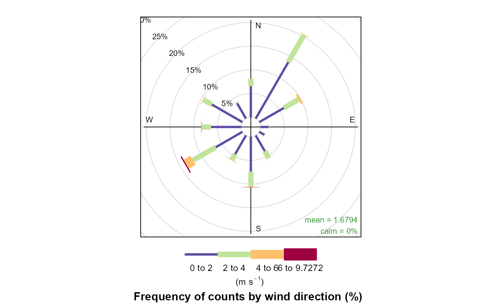

Einleitung
Dieses Dokument soll einem Anwender des Packages rOstluft::rOstluft einen Überblick der enthaltenen Funktionalität bieten und die gängigsten Arbeitsabläufe aufzeigen.
Der Fokus dieses Packages liegt in der Bereitstellung von Daten aus verschiedenen Datenquellen in einem einheitlichen Format zur Analyse der Luftqualität. Ausserdem enthält es Werkzeuge für einige übliche Aufgaben, die während solchen Analysen anfallen. Diese sind Umrechnungen zwischen verschiedenen Mittelungsintervallen, Statistische Methoden mit Berücksichtung der Datenverfügbarkeit, Umwandlung von Volumen- und Massenkonzentrationen und lesen von Daten vorliegend in verschiedenen Formaten.
Installation
Der Quellcode von rOstluft ist auf github gehosted. Die einfachste Variante ist die Installation mit Hilfe des Packages devtools:
#install.packages("devtools") devtools::install_github("Ostluft/rOstluft")
Zusätzlich muss das Package aws.s3 manuell aus dem cloudyr Repositorium installiert werden, weil die CRANR Version veraltet ist:
install.packages("aws.s3", repos = c("cloudyr" = "http://cloudyr.github.io/drat"))
Ist dies wegen Einschränkungen durch Firewalls oder Proxies nicht möglich. Muss der Quellcode manuell von github heruntergeladen werden (Clone or download > Download as ZIP), entpackt und manuell installiert werden. Allerdings bestehen Abhängigkeiten zu Packages die auf CRAN bereitgestellt werden. Können auch keine CRAN Packages installiert werden, müssen zuerst alle CRAN Abhängkigkeiten und deren Abhängigkeiten installiert werden.
Zusätzlich besteht noch die Github Abhängkigkeit zu rOstluft.data. Dieses Packages muss auf die gleiche Weise zuerst installiert werden mit folgenden Schritten:
download.file("https://github.com/Ostluft/rOstluft/archive/master.zip", "rOstluft-master.zip") download.file("https://github.com/Ostluft/rOstluft.data/archive/master.zip", "rOstluft.data-master.zip") install.packages("devtools") install.packages("aws.s3", repos = c("cloudyr" = "http://cloudyr.github.io/drat")) deps <- c('dplyr', 'tidyr', 'lubridate', 'R6', 'rappdirs', 'tibble', 'base64url', 'forcats', 'fs', 'purrr', 'readr', 'stringr', 'stringi', 'sp', 'rgdal', 'rlang', 'magrittr') for (p in deps) { install.packages(p) } devtools::install_local("rOstluft.data-master.zip", dependencies = FALSE) devtools::install_local("rOstluft-master.zip", dependencies = FALSE)
Falls das installieren von rOstluft scheitert, fehlt vermutlich eine Abhängigkeit. Welche das ist, kann der Fehlermeldung entnommen werden.
Nach der Installation kann das Packages verwendet werden:
Abfrage von Daten
Ostluft Amazon AWS S3
Die zentrale Datenablage innerhalb von Ostluft erfolgt auf Amazon AWS S3.Aus Lizenztechnischen Gründen kann das Bucket nicht öffentlich zugänglich gemacht werden. Die Zugangsdaten werden von Jörg Sintermann vergeben. Die Zugangsdaten werden am einfachsten über eine .Renvirion Datei im Verzeichnis des RStudio Projektes oder im HOME Verzeichnis des Users1 dem Package zugänglich gemacht. Inhalt der .Renvirion Datei:
AWS_ACCESS_KEY_ID = "XXXXXXXXXXXXXXXXXXXX"
AWS_SECRET_ACCESS_KEY = "XXXXXXXXXXXXXXXXXXXXXXXXXXXXXXXXXXXXXXXX"
AWS_DEFAULT_REGION = "eu-central-1"Weitere Möglichkeiten sind in der Dokumentation von aws.signature zu finden.
Sämtliche Daten die einmal von Amazon S3 geöffnet wurden, werden lokal auf dem Rechner gespeichert. Bei jedem folgenden Zugriff wird nur überprüft, ob die Daten noch identisch sind.
Der Zugriff auf die Daten erfügt dann über ein store Objekt, welches auf folgende Art initialisiert wird:
store <- storage_s3_rds("tutorial", format = format_rolf(), bucket = "rostluft", prefix = "aqmet") # oder nutze den vordefinierten store (name ist optional, default ist "aqmet") store <- store_aqmet("tutorial")
Dieses store Objekt verfügt über verschiedene Methoden, zur Abfrage von Daten sind jedoch nur zwei von Bedeutung:
-
$get_content(): holt eine Übersicht über alle im store enthaltene Daten -
$get(): Aktuelle Datenabfrage. Welche Daten geholt werden, muss über Funktionsargumente definiert werden
content <- store$get_content() content #> # A tibble: 179,019 x 6 #> year interval site parameter unit n #> <dbl> <fct> <fct> <fct> <fct> <int> #> 1 2013 h1 Zürich - EraInterim blh m 730 #> 2 2013 h1 Zürich - EraInterim cape J/kg 730 #> 3 2013 h1 Zürich - EraInterim d2m °C 7300 #> 4 2013 h1 Zürich - EraInterim e m H2O 730 #> 5 2013 h1 Zürich - EraInterim ishf W/m2 730 #> 6 2013 h1 Zürich - EraInterim p hPa 730 #> 7 2013 h1 Zürich - EraInterim par J/m2 730 #> 8 2013 h1 Zürich - EraInterim RainSum m 730 #> 9 2013 h1 Zürich - EraInterim skt °C 7300 #> 10 2013 h1 Zürich - EraInterim slhf J/m2 730 #> # ... with 179,009 more rows dplyr::sample_n(content, 10) #> # A tibble: 10 x 6 #> year interval site parameter unit n #> <dbl> <fct> <fct> <fct> <fct> <int> #> 1 2014 y1 Wee_Weerstein O3_98%_min30_max_m1 µg/m3 11 #> 2 2001 m1 Zch_Schimmelstrasse CO mg/m3 12 #> 3 2006 min30 Wal_Dietlikonerstrasse NOx ppb 17121 #> 4 2016 y1 StG_Stuelegg NOx_min_min30 ppb 1 #> 5 2008 d1 Zch_Stampfenbachstrasse NO2 µg/m3 3588 #> 6 2003 y1 9030_0010 NO2 µg/m3 11 #> 7 2013 d1 Obf_Gugelrebenstrasse NO_nb_min30 1 145 #> 8 1998 d1 Opf_Tenniscenter p hPa 360 #> 9 2002 y1 St.Gallen Hr % 1 #> 10 2011 m1 StG_Stuelegg WD ° 122
Eine Datenabfrage holt immer die Daten von einem komplettem Jahr einer Station für einen bestimmten Mittelungszeitraum:
store$get(site = "Zch_Schimmelstrasse", year = 2014, interval = "min30") #> # A tibble: 243,875 x 6 #> starttime site parameter interval unit value #> <dttm> <fct> <fct> <fct> <fct> <dbl> #> 1 2014-01-01 00:00:00 Zch_Schimmelstrasse CO min30 ppm 0.637 #> 2 2014-01-01 00:00:00 Zch_Schimmelstrasse Hr min30 %Hr 87.4 #> 3 2014-01-01 00:00:00 Zch_Schimmelstrasse NO2 min30 ppb 28.1 #> 4 2014-01-01 00:00:00 Zch_Schimmelstrasse NO min30 ppb 61.5 #> 5 2014-01-01 00:00:00 Zch_Schimmelstrasse NOx min30 ppb 89.6 #> 6 2014-01-01 00:00:00 Zch_Schimmelstrasse O3 min30 ppb 0.798 #> 7 2014-01-01 00:00:00 Zch_Schimmelstrasse PM10 min30 µg/m3 102. #> 8 2014-01-01 00:00:00 Zch_Schimmelstrasse PN min30 1/cm3 25971 #> 9 2014-01-01 00:00:00 Zch_Schimmelstrasse RainDur min30 min 0 #> 10 2014-01-01 00:00:00 Zch_Schimmelstrasse SO2 min30 ppb 2.12 #> # ... with 243,865 more rows
Jedes der Argumente kann auch ein Vector sein mit mehreren Werte. Es wird dann Kombination aller Möglichkeiten abgefragt.
sites <- c("Zch_Schimmelstrasse", "Zch_Rosengartenstrasse", "Zch_Stampfenbachstrasse") data <- store$get(site = sites, year = 2014:2015, interval = "min30") data #> # A tibble: 1,287,367 x 6 #> starttime site parameter interval unit value #> <dttm> <fct> <fct> <fct> <fct> <dbl> #> 1 2014-01-01 00:00:00 Zch_Rosengartenstrasse Hr min30 %Hr 92.7 #> 2 2014-01-01 00:00:00 Zch_Rosengartenstrasse NO2 min30 ppb 18.6 #> 3 2014-01-01 00:00:00 Zch_Rosengartenstrasse NO min30 ppb 42.8 #> 4 2014-01-01 00:00:00 Zch_Rosengartenstrasse NOx min30 ppb 61.4 #> 5 2014-01-01 00:00:00 Zch_Rosengartenstrasse O3 min30 ppb 0.776 #> 6 2014-01-01 00:00:00 Zch_Rosengartenstrasse PM10 min30 µg/m3 298. #> 7 2014-01-01 00:00:00 Zch_Rosengartenstrasse RainDur min30 min 0 #> 8 2014-01-01 00:00:00 Zch_Rosengartenstrasse T min30 °C -2.18 #> 9 2014-01-01 00:00:00 Zch_Rosengartenstrasse p min30 hPa 966. #> 10 2014-01-01 00:30:00 Zch_Rosengartenstrasse Hr min30 %Hr 89.1 #> # ... with 1,287,357 more rows dplyr::sample_n(data, 10) #> # A tibble: 10 x 6 #> starttime site parameter interval unit value #> <dttm> <fct> <fct> <fct> <fct> <dbl> #> 1 2015-11-19 09:00:00 Zch_Rosengartenstrasse Hr min30 %Hr 64.0 #> 2 2015-10-21 20:30:00 Zch_Schimmelstrasse RainDur min30 min 0 #> 3 2014-09-16 05:00:00 Zch_Rosengartenstrasse RainDur min30 min 0 #> 4 2015-07-04 15:30:00 Zch_Rosengartenstrasse Hr min30 %Hr 26.4 #> 5 2014-08-07 21:30:00 Zch_Rosengartenstrasse PM10 min30 µg/m3 14.9 #> 6 2015-05-30 06:00:00 Zch_Schimmelstrasse p min30 hPa 968. #> 7 2014-02-26 11:30:00 Zch_Schimmelstrasse SO2 min30 ppb 1.57 #> 8 2015-05-05 17:00:00 Zch_Schimmelstrasse T min30 °C 19.4 #> 9 2015-02-07 22:30:00 Zch_Stampfenbachstrasse RainDur min30 min 0 #> 10 2014-03-03 17:00:00 Zch_Schimmelstrasse NOx min30 ppb 35.1
Die letzte Funktionalität von $get() ist die Filterung der Daten vor der Rückgabe. Mit dem Argument “filter” als dplyr::filter() kompatibler Ausdruck:
store$get(site = sites, year = 2014, interval = "min30", filter = parameter == "PM10") #> # A tibble: 51,319 x 6 #> starttime site parameter interval unit value #> <dttm> <fct> <fct> <fct> <fct> <dbl> #> 1 2014-01-01 00:00:00 Zch_Rosengartenstrasse PM10 min30 µg/m3 298. #> 2 2014-01-01 00:30:00 Zch_Rosengartenstrasse PM10 min30 µg/m3 557. #> 3 2014-01-01 01:00:00 Zch_Rosengartenstrasse PM10 min30 µg/m3 308. #> 4 2014-01-01 01:30:00 Zch_Rosengartenstrasse PM10 min30 µg/m3 169. #> 5 2014-01-01 02:00:00 Zch_Rosengartenstrasse PM10 min30 µg/m3 128. #> 6 2014-01-01 02:30:00 Zch_Rosengartenstrasse PM10 min30 µg/m3 82.99 #> 7 2014-01-01 03:00:00 Zch_Rosengartenstrasse PM10 min30 µg/m3 38.33 #> 8 2014-01-01 03:30:00 Zch_Rosengartenstrasse PM10 min30 µg/m3 32.66 #> 9 2014-01-01 04:00:00 Zch_Rosengartenstrasse PM10 min30 µg/m3 32.44 #> 10 2014-01-01 04:30:00 Zch_Rosengartenstrasse PM10 min30 µg/m3 31.77 #> # ... with 51,309 more rows
Lokales Arbeiten mit den AWS S3 Daten
Ein Nachteil des S3 Storage ist, dass bei jeder Datenabfrage eine Internetverbindung zur Überprüfung, ob aktualisierte Daten verfügbar sind, vorhanden sein muss. Selbst wenn die Daten bereits lokal gespeichert sind. Nicht nur wird eine Internetverbindung benötigt, die Überprüfung braucht auch eine kurze Zeit. Hat man alle notwendigen Daten bereits herunter geladen, kann man jedoch mit einem lokalen Store arbeiten. Praktischerweise hat der S3 Store eine Funktion, welche einen lokalen Store zurückgibt.
lokal <- store$get_local_storage()
Dieser verfügt über die gleichen Funktionalität wie der S3 Store:
lokal$get_content() #> # A tibble: 179,019 x 6 #> year interval site parameter unit n #> <dbl> <fct> <fct> <fct> <fct> <int> #> 1 2013 h1 Zürich - EraInterim blh m 730 #> 2 2013 h1 Zürich - EraInterim cape J/kg 730 #> 3 2013 h1 Zürich - EraInterim d2m °C 7300 #> 4 2013 h1 Zürich - EraInterim e m H2O 730 #> 5 2013 h1 Zürich - EraInterim ishf W/m2 730 #> 6 2013 h1 Zürich - EraInterim p hPa 730 #> 7 2013 h1 Zürich - EraInterim par J/m2 730 #> 8 2013 h1 Zürich - EraInterim RainSum m 730 #> 9 2013 h1 Zürich - EraInterim skt °C 7300 #> 10 2013 h1 Zürich - EraInterim slhf J/m2 730 #> # ... with 179,009 more rows lokal$get(site = sites, year = 2014, interval = "min30", filter = parameter == "PM10") #> # A tibble: 51,319 x 6 #> starttime site parameter interval unit value #> <dttm> <fct> <fct> <fct> <fct> <dbl> #> 1 2014-01-01 00:00:00 Zch_Rosengartenstrasse PM10 min30 µg/m3 298. #> 2 2014-01-01 00:30:00 Zch_Rosengartenstrasse PM10 min30 µg/m3 557. #> 3 2014-01-01 01:00:00 Zch_Rosengartenstrasse PM10 min30 µg/m3 308. #> 4 2014-01-01 01:30:00 Zch_Rosengartenstrasse PM10 min30 µg/m3 169. #> 5 2014-01-01 02:00:00 Zch_Rosengartenstrasse PM10 min30 µg/m3 128. #> 6 2014-01-01 02:30:00 Zch_Rosengartenstrasse PM10 min30 µg/m3 82.99 #> 7 2014-01-01 03:00:00 Zch_Rosengartenstrasse PM10 min30 µg/m3 38.33 #> 8 2014-01-01 03:30:00 Zch_Rosengartenstrasse PM10 min30 µg/m3 32.66 #> 9 2014-01-01 04:00:00 Zch_Rosengartenstrasse PM10 min30 µg/m3 32.44 #> 10 2014-01-01 04:30:00 Zch_Rosengartenstrasse PM10 min30 µg/m3 31.77 #> # ... with 51,309 more rows
Dem aufmerksamen Leser ist vermutlich aufgefallen, dass die Inhaltsübersicht von $get_content() nicht dem lokalen Inhalt entspricht. Es ist immer noch die Übersicht welche Daten in S3 verfügbar wären. Will man wissen welche Daten lokal verfügbar sind, hilft einem die Funktion $list_chunks() weiter.
tibble::glimpse(lokal$list_chunks()) #> Rows: 6 #> Columns: 7 #> $ chunk_name <fs::path> "min30/bWluMzDCu1pjaF9Sb3NlbmdhcnRlbnN... #> $ interval <chr> "min30", "min30", "min30", "min30", "min30"... #> $ site <chr> "Zch_Rosengartenstrasse", "Zch_Rosengartens... #> $ year <chr> "2014", "2015", "2014", "2015", "2014", "2015" #> $ local.path <fs::path> "C:/Users/tom/AppData/Local/rOstluft/t... #> $ local.modification_time <dttm> 2020-09-20 22:42:10, 2020-09-20 22:42:11, ... #> $ local.size <fs::bytes> 662.71K, 780.21K, 1.08M, 1.07M, 1.08M...
Auch der S3 Store verfügt über die $list_chunks() Funktion.
tibble::glimpse(store$list_chunks()) #> Rows: 13,296 #> Columns: 11 #> $ chunk_name <fs::path> "d1/ZDHCu01hdV9Qw7xudMK7MTk5MA", "d1/Z... #> $ interval <chr> "d1", "d1", "d1", "d1", "d1", "d1", "d1", "... #> $ site <chr> "Mau_Pünt", "Mau_Pünt", "Mau_Pünt", "Mau_Pü... #> $ year <chr> "1990", "1991", "1992", "1993", "1994", "19... #> $ s3.key <chr> "aqmet/data/d1/ZDHCu01hdV9Qw7xudMK7MTk5MA.r... #> $ s3.lastmodified <chr> "2020-03-20T18:06:04.000Z", "2020-03-20T18:... #> $ s3.etag <chr> "4d357b0954a7c44ad13a2ce146fed821", "57847e... #> $ s3.size <fs::bytes> 15.78K, 27.11K, 29.25K, 28.32K, 16.95... #> $ local.path <fs::path> NA, NA, NA, NA, NA, NA, NA, NA, NA, NA... #> $ local.modification_time <dttm> NA, NA, NA, NA, NA, NA, NA, NA, NA, NA, NA... #> $ local.size <fs::bytes> NA, NA, NA, NA, NA, NA, NA, NA, NA, N...
Im normal Fall ist Nutzung von $get_content() über $list_chunks() zu bevorzugen. Die Rückgabe von $get_content() enthält die gemessen Parameter und die Anzahl der gültigen Punkte. Bei $list_chunks() hingegen sind einige interne Informationen über den Store enthalten.
Um die Vorbereitung um mit einem lokalen Store zu arbeiten zu vereinfachen verfügt der S3 Store über die Funktion $download(...). Die dot Argumente werden als Filter auf die Rückgabe von $list_chunks() angewendet. Ohne Argumente wird der komplette Store heruntergeladen. Folgendes Beispiel lädt samtliche 30 Minutenmittelwerte für die Station Rosengartenstrasse nach dem Jahr 2015 (Achtung == verwenden, es sind Filter Ausdrücke!):
store$download(site == "Zch_Rosengartenstrasse", interval == "min30", year > 2015) #> list() lokal$list_chunks() %>% dplyr::select("site", "year", "interval") #> # A tibble: 10 x 3 #> site year interval #> <chr> <chr> <chr> #> 1 Zch_Rosengartenstrasse 2017 min30 #> 2 Zch_Rosengartenstrasse 2018 min30 #> 3 Zch_Rosengartenstrasse 2019 min30 #> 4 Zch_Rosengartenstrasse 2014 min30 #> 5 Zch_Rosengartenstrasse 2015 min30 #> 6 Zch_Rosengartenstrasse 2016 min30 #> 7 Zch_Stampfenbachstrasse 2014 min30 #> 8 Zch_Stampfenbachstrasse 2015 min30 #> 9 Zch_Schimmelstrasse 2014 min30 #> 10 Zch_Schimmelstrasse 2015 min30
Eigene Daten in einem lokalen Store
Der aqmet S3 Store enthält nur bereinigte Daten von abgeschlossenen Jahren. Werden Daten benötigt, die nicht in S3 vorhanden sind, bietet sich die Nutzung eines seperaten lokalen Stores an:
my_store = storage_local_rds("eigene_daten", format_rolf(), read.only = FALSE) #> Local store eigene_daten initialized under 'C:\Users\tom\AppData\Local\rOstluft\eigene_daten'
In diesen kann man nun Daten mit der Store Funktion $put() oder der Hilfsfunktion import_directory() importieren:
examples_path <- system.file("extdata", package = "rOstluft.data") import_directory(my_store, examples_path, read_airmo_csv, glob = "*Jan.csv") #> Importing 'D:/tom/Documents/R/win-library/3.6/rOstluft.data/extdata/Zch_Stampfenbachstrasse_d1_2013_Jan.csv' with size 25.5K. File 1 of 3 #> Read 'D:/tom/Documents/R/win-library/3.6/rOstluft.data/extdata/Zch_Stampfenbachstrasse_d1_2013_Jan.csv' in 0.35 seconds. Got 2170 data points #> First put to storage. Save columns types to C:/Users/tom/AppData/Local/rOstluft/eigene_daten/columns.rds #> Put data into store eigene_daten in 0.11 seconds #> Importing 'D:/tom/Documents/R/win-library/3.6/rOstluft.data/extdata/Zch_Stampfenbachstrasse_h1_2013_Jan.csv' with size 143K. File 2 of 3 #> Read 'D:/tom/Documents/R/win-library/3.6/rOstluft.data/extdata/Zch_Stampfenbachstrasse_h1_2013_Jan.csv' in 0.06 seconds. Got 14116 data points #> Put data into store eigene_daten in 0.13 seconds #> Importing 'D:/tom/Documents/R/win-library/3.6/rOstluft.data/extdata/Zch_Stampfenbachstrasse_min30_2013_Jan.csv' with size 259K. File 3 of 3 #> Read 'D:/tom/Documents/R/win-library/3.6/rOstluft.data/extdata/Zch_Stampfenbachstrasse_min30_2013_Jan.csv' in 0.07 seconds. Got 28234 data points #> Put data into store eigene_daten in 0.11 seconds #> Finished import after 0.83 seconds fn <- fs::path(examples_path, "Zch_Rosengartenstrasse_2010-2014.csv") data <- read_airmo_csv(fn) my_store$put(data) #> # A tibble: 18 x 6 #> year interval site parameter unit n #> <dbl> <fct> <fct> <fct> <fct> <int> #> 1 2013 min30 Zch_Rosengartenstrasse NO µg/m3 42699 #> 2 2013 min30 Zch_Rosengartenstrasse NO2 µg/m3 42699 #> 3 2013 min30 Zch_Rosengartenstrasse NOx ppb 4269 #> 4 2013 min30 Zch_Rosengartenstrasse O3 µg/m3 42777 #> 5 2013 min30 Zch_Rosengartenstrasse PM10 µg/m3 40255 #> 6 2013 min30 Zch_Rosengartenstrasse Hr %Hr 4010 #> 7 2013 min30 Zch_Rosengartenstrasse p hPa 4291 #> 8 2013 min30 Zch_Rosengartenstrasse RainDur min 4291 #> 9 2013 min30 Zch_Rosengartenstrasse T °C 40100 #> 10 2014 min30 Zch_Rosengartenstrasse NO µg/m3 174155 #> 11 2014 min30 Zch_Rosengartenstrasse NO2 µg/m3 174155 #> 12 2014 min30 Zch_Rosengartenstrasse NOx ppb 17415 #> 13 2014 min30 Zch_Rosengartenstrasse O3 µg/m3 173666 #> 14 2014 min30 Zch_Rosengartenstrasse PM10 µg/m3 167888 #> 15 2014 min30 Zch_Rosengartenstrasse Hr %Hr 17517 #> 16 2014 min30 Zch_Rosengartenstrasse p hPa 17519 #> 17 2014 min30 Zch_Rosengartenstrasse RainDur min 17519 #> 18 2014 min30 Zch_Rosengartenstrasse T °C 175177
Wie gewohnt kann erhält man mit $get_content() eine Übersicht und die Daten mit $get():
my_store$get_content() #> # A tibble: 126 x 6 #> year interval site parameter unit n #> <dbl> <fct> <fct> <fct> <fct> <int> #> 1 2014 min30 Zch_Rosengartenstrasse NO µg/m3 174155 #> 2 2014 min30 Zch_Rosengartenstrasse NO2 µg/m3 174155 #> 3 2014 min30 Zch_Rosengartenstrasse NOx ppb 17415 #> 4 2014 min30 Zch_Rosengartenstrasse O3 µg/m3 173666 #> 5 2014 min30 Zch_Rosengartenstrasse PM10 µg/m3 167888 #> 6 2014 min30 Zch_Rosengartenstrasse Hr %Hr 17517 #> 7 2014 min30 Zch_Rosengartenstrasse p hPa 17519 #> 8 2014 min30 Zch_Rosengartenstrasse RainDur min 17519 #> 9 2014 min30 Zch_Rosengartenstrasse T °C 175177 #> 10 2013 min30 Zch_Rosengartenstrasse NO µg/m3 42699 #> # ... with 116 more rows my_store$get(site = "Zch_Stampfenbachstrasse", interval = c("d1", "h1"), year = 2013) %>% dplyr::arrange(.data$starttime, .data$parameter) #> # A tibble: 16,286 x 6 #> starttime site parameter interval unit value #> <dttm> <fct> <fct> <fct> <fct> <dbl> #> 1 2013-01-01 00:00:00 Zch_Stampfenbachstrasse CO d1 mg/m3 0.381 #> 2 2013-01-01 00:00:00 Zch_Stampfenbachstrasse CO d1 ppm 0.327 #> 3 2013-01-01 00:00:00 Zch_Stampfenbachstrasse CO h1 mg/m3 0.805 #> 4 2013-01-01 00:00:00 Zch_Stampfenbachstrasse CO h1 ppm 0.692 #> 5 2013-01-01 00:00:00 Zch_Stampfenbachstrasse CO_max_min~ d1 mg/m3 0.966 #> 6 2013-01-01 00:00:00 Zch_Stampfenbachstrasse CO_min_min~ d1 mg/m3 0.190 #> 7 2013-01-01 00:00:00 Zch_Stampfenbachstrasse CO_nb_min30 d1 1 48 #> 8 2013-01-01 00:00:00 Zch_Stampfenbachstrasse Hr d1 %Hr 76.0 #> 9 2013-01-01 00:00:00 Zch_Stampfenbachstrasse Hr h1 %Hr 82.9 #> 10 2013-01-01 00:00:00 Zch_Stampfenbachstrasse Hr_max_min~ d1 %Hr 88.4 #> # ... with 16,276 more rows
Einlesefunktionen von Daten
Um Daten in R einzulesen exisitieren für folgende Quellen bereits Funktionen:
- Ostluft:
read_airmo_csv()undread_airmo_dat()für Exporte aus der AIRMO - MeteoSchweiz:
read_smn()undread_smn_multiple()für SwissMetNet Exporte - ETHZ/IAC:
read_ethz_iac()Meteo Stationen auf dem Hönggerberg und dem Hauptgebäude CHN
Existiert für die vorliegenden Daten keine Funktion und man möchte die selber schreiben an dieser Stelle einige Hinweise und Tipps.
Verwende readr Funktionen und definiere die Zeichenkodierung
Ein generelles Problem beim einlesen von Textdateien ist die Zeichenkodierung. Die meisten haben vermutlich “�” schon in Texten gesehen. Alle Daten im aqmet Store und alle Rückgabewerte von read_xxx() Funktionen sind UTF-8 kodiert. Mit dem readr Packages wird bei korrekter Definition der Locale der Text automatisch zu UTF-8 konvertiert. Im Gegensatz zu den R Base Funktionen oderdata.table::fread().
Ausgabeformat rolf
Für ein reibungsloses Zusammenspiel mit den Stores zu garantieren muss das Format rolf eingehalten werden. rolf setzt einen tibble mit folgenden Spalten und Klassen voraus:
| Spalte | Klasse |
|---|---|
| “starttime” | POSIXct |
| “site” | factor |
| “parameter” | factor |
| “interval” | factor |
| “unit” | factor |
| “value” | double |
Selbst wenn in der Datei keine Einheiten enthalten sind, ist es besser die Spalte unit mit NA zu initialisieren. Ein weiterer Trick ist es die Spalten am Ende explizit zu selektionieren. Hier ein Beispiel, wie es in read_smn() gelöst ist:
data <- dplyr::mutate(data, stn = forcats::as_factor(.data$stn), parameter = forcats::as_factor(.data$parameter), interval = forcats::as_factor(interval), unit = factor(NA) ) dplyr::select(data, starttime = "time", site = "stn", "parameter", "interval", "unit", "value")
Mit dem dplyr::select am Ende ist man sicher nur die Spalten in der Rückgabe zu haben die man haben will und es ist einfach noch Spalten umzubenennen und die Reihenfolge zu ändern.
Zusammenfügen von Daten im rolf Format
Die Verwendung von Factoren im rolf Format hat seine Vor- und Nachteile. Der Hauptvorteil liegt bei schnelleren Lese- und Schreiboperation, der grösste Nachteil beim Zusammenfügen der Daten. dplyr::bind_rows wird die Factoren in Characters umwandeln, wenn unterschiedliche Levels in den Daten vorhanden sind. Die Funktion bind_rows_with_factor_columns() führt das Zusammenfügen korrekt aus. Sie unterstützt ausserdem Quasiquotation von rlang2. Somit kann auch eine grosse Liste von tibbles im rolf Format komfortable aneinander gefügt werden:
df1 <- read_airmo_csv(fs::path(examples_path, "Zch_Stampfenbachstrasse_h1_2013_Jan.csv")) df2 <- read_airmo_csv(fs::path(examples_path, "Zch_Stampfenbachstrasse_d1_2013_Jan.csv")) df_comb <- bind_rows_with_factor_columns(df1, df2) df_comb %>% dplyr::arrange(.data$starttime, .data$parameter) #> # A tibble: 16,286 x 6 #> starttime site parameter interval unit value #> <dttm> <fct> <fct> <fct> <fct> <dbl> #> 1 2013-01-01 00:00:00 Zch_Stampfenbachstrasse CO h1 mg/m3 0.805 #> 2 2013-01-01 00:00:00 Zch_Stampfenbachstrasse CO h1 ppm 0.692 #> 3 2013-01-01 00:00:00 Zch_Stampfenbachstrasse CO d1 mg/m3 0.381 #> 4 2013-01-01 00:00:00 Zch_Stampfenbachstrasse CO d1 ppm 0.327 #> 5 2013-01-01 00:00:00 Zch_Stampfenbachstrasse Hr h1 %Hr 82.9 #> 6 2013-01-01 00:00:00 Zch_Stampfenbachstrasse Hr d1 %Hr 76.0 #> 7 2013-01-01 00:00:00 Zch_Stampfenbachstrasse NO h1 µg/m3 80.5 #> 8 2013-01-01 00:00:00 Zch_Stampfenbachstrasse NO h1 ppb 64.6 #> 9 2013-01-01 00:00:00 Zch_Stampfenbachstrasse NO d1 µg/m3 17.6 #> 10 2013-01-01 00:00:00 Zch_Stampfenbachstrasse NO d1 ppb 14.1 #> # ... with 16,276 more rows # liste mit 20+ tibbles df_list <- read_smn_multiple(fs::path(examples_path, "smn_multi.txt"), as_list = TRUE) length(df_list) #> [1] 28 df_comb <- bind_rows_with_factor_columns(!!!df_list) df_comb %>% dplyr::arrange(.data$starttime, .data$parameter) #> # A tibble: 1,399 x 6 #> starttime site parameter interval unit value #> <dttm> <fct> <fct> <fct> <fct> <dbl> #> 1 2010-01-01 00:00:00 KLO dkl010b0 h1 <NA> 319 #> 2 2010-01-01 00:00:00 KLO fkl010b0 h1 <NA> 1.5 #> 3 2010-01-01 00:00:00 KLO gre000b0 h1 <NA> 0 #> 4 2010-01-01 00:00:00 KLO tre200b0 h1 <NA> 2.3 #> 5 2010-01-01 00:00:00 UEB dk1towb0 h1 <NA> 249 #> 6 2010-01-01 00:00:00 UEB fk1towb0 h1 <NA> 1.7 #> 7 2010-01-01 00:00:00 UEB ta1towb0 h1 <NA> 3.7 #> 8 2010-01-01 01:00:00 KLO dkl010b0 h1 <NA> 317 #> 9 2010-01-01 01:00:00 KLO fkl010b0 h1 <NA> 1.7 #> 10 2010-01-01 01:00:00 KLO gre000b0 h1 <NA> 0 #> # ... with 1,389 more rows
bind_rows_with_factor_columns() entfernt jedoch keine Duplikate aus den Daten. Es hängt die Daten einfach aneinander. Möchte man Duplikate entfernen, bzw. Daten aktualisieren mit neueren Daten muss man die Funktion $merge() des Format Objekts benützen. Dieses wurde beim Erzeugen des Store direkt initialisiert und ist als Feld $format verfügbar. Alternativ kann ein seperates Format Objekt erzeugt werden. Die Daten im ersten Datenframe werden über Daten im zweiten Datenframe priorisiert.
# kopiere Daten und setze einige NA -> Resultat sollte NA enthalten df1 <- df2 df1$value[1:150] <- NA df_comb <- store$format$merge(df1, df2) df_comb %>% dplyr::arrange(.data$starttime, .data$parameter) #> # A tibble: 2,170 x 6 #> starttime site parameter interval unit value #> <dttm> <fct> <fct> <fct> <fct> <dbl> #> 1 2013-01-01 00:00:00 Zch_Stampfenbachstrasse CO d1 mg/m3 NA #> 2 2013-01-01 00:00:00 Zch_Stampfenbachstrasse CO d1 ppm NA #> 3 2013-01-01 00:00:00 Zch_Stampfenbachstrasse CO_max_min30 d1 mg/m3 NA #> 4 2013-01-01 00:00:00 Zch_Stampfenbachstrasse CO_min_min30 d1 mg/m3 NA #> 5 2013-01-01 00:00:00 Zch_Stampfenbachstrasse CO_nb_min30 d1 1 NA #> 6 2013-01-01 00:00:00 Zch_Stampfenbachstrasse Hr d1 %Hr 76.0 #> 7 2013-01-01 00:00:00 Zch_Stampfenbachstrasse Hr_max_min30 d1 %Hr 88.4 #> 8 2013-01-01 00:00:00 Zch_Stampfenbachstrasse Hr_min_min30 d1 %Hr 50.3 #> 9 2013-01-01 00:00:00 Zch_Stampfenbachstrasse Hr_nb_min30 d1 1 48 #> 10 2013-01-01 00:00:00 Zch_Stampfenbachstrasse NO d1 µg/m3 17.66 #> # ... with 2,160 more rows rolf <- format_rolf() df_comb <- rolf$merge(df1, df2) df_comb %>% dplyr::arrange(.data$starttime, .data$parameter) #> # A tibble: 2,170 x 6 #> starttime site parameter interval unit value #> <dttm> <fct> <fct> <fct> <fct> <dbl> #> 1 2013-01-01 00:00:00 Zch_Stampfenbachstrasse CO d1 mg/m3 NA #> 2 2013-01-01 00:00:00 Zch_Stampfenbachstrasse CO d1 ppm NA #> 3 2013-01-01 00:00:00 Zch_Stampfenbachstrasse CO_max_min30 d1 mg/m3 NA #> 4 2013-01-01 00:00:00 Zch_Stampfenbachstrasse CO_min_min30 d1 mg/m3 NA #> 5 2013-01-01 00:00:00 Zch_Stampfenbachstrasse CO_nb_min30 d1 1 NA #> 6 2013-01-01 00:00:00 Zch_Stampfenbachstrasse Hr d1 %Hr 76.0 #> 7 2013-01-01 00:00:00 Zch_Stampfenbachstrasse Hr_max_min30 d1 %Hr 88.4 #> 8 2013-01-01 00:00:00 Zch_Stampfenbachstrasse Hr_min_min30 d1 %Hr 50.3 #> 9 2013-01-01 00:00:00 Zch_Stampfenbachstrasse Hr_nb_min30 d1 1 48 #> 10 2013-01-01 00:00:00 Zch_Stampfenbachstrasse NO d1 µg/m3 17.66 #> # ... with 2,160 more rows
Die $merge() Funktion unterstützt nur 2 Argumente. Muss eine Liste von tibbles gemerget werden muss man purrr::reduce() benützen. Mit Hilfe des Argument .dir kann man die Priosierung setzen. Mit “forward”" haben die Daten die zuerst in der Liste auftauchen Priorität, mit “backward” die Letzten.
df_comb <- purrr::reduce(df_list, rolf$merge, .dir = "forward") df_comb %>% dplyr::arrange(.data$starttime, .data$parameter) #> # A tibble: 1,399 x 6 #> starttime site parameter interval unit value #> <dttm> <fct> <fct> <fct> <fct> <dbl> #> 1 2010-01-01 00:00:00 KLO dkl010b0 h1 <NA> 319 #> 2 2010-01-01 00:00:00 KLO fkl010b0 h1 <NA> 1.5 #> 3 2010-01-01 00:00:00 KLO gre000b0 h1 <NA> 0 #> 4 2010-01-01 00:00:00 KLO tre200b0 h1 <NA> 2.3 #> 5 2010-01-01 00:00:00 UEB dk1towb0 h1 <NA> 249 #> 6 2010-01-01 00:00:00 UEB fk1towb0 h1 <NA> 1.7 #> 7 2010-01-01 00:00:00 UEB ta1towb0 h1 <NA> 3.7 #> 8 2010-01-01 01:00:00 KLO dkl010b0 h1 <NA> 317 #> 9 2010-01-01 01:00:00 KLO fkl010b0 h1 <NA> 1.7 #> 10 2010-01-01 01:00:00 KLO gre000b0 h1 <NA> 0 #> # ... with 1,389 more rows
Metadaten
Daten aus verschiedenen Quellen werden verschiedene Schemen für die Vergabe von Namen haben. MeteoSchweiz zum Beispiel kodiert im Parameter Namen gleichzeitig das Mittelungsinterval:
| Parameter | Interval | Messgrösse |
|---|---|---|
| ta1towb0 | Bürgerliche Stundenmittel | Lufttemperatur, Instrument 1 |
| ta1towh0 | Stundenmittel | Lufttemperatur, Instrument 1 |
| ta1tows0 | Momentanwerte | Lufttemperatur, Instrument 1 |
| fk1towz0 | Zehnminutenmittel | Windgeschwindigkeit skalar, Instrument 1 |
Um die Bezeichnungen zu normalisieren kommt es zu einem Zusammenspiel von im Store bereitgestellte Daten und der Funktion meta_apply(). Das Store Objekt verfügt über die Funktion $get_meta(), welche im AWS S3 bereitgestellte Metadaten zurück gibt. Wird $get_meta() ohne Argument aufgerufen erhält man eine Liste mit sämtlichen Metadaten im Store. Kennt man bereits den Namen kann man direkt die entsprechenden Metadaten holen:
meta <- store$get_meta() names(meta) #> [1] "all" "ecmwf" #> [3] "ethz" "hysplit" #> [5] "hysplit_cluster_trajectories" "meteoschweiz" #> [7] "meteotest" "nabel" #> [9] "ostluft" "seepolizei" meteoschweiz <- store$get_meta("meteoschweiz") tibble::glimpse(meteoschweiz) #> List of 1 #> $ meteoschweiz: tibble [263 x 15] (S3: tbl_df/tbl/data.frame) #> ..$ site_short : chr [1:263] "TAE" "TAE" "TAE" "TAE" ... #> ..$ site : chr [1:263] "Aadorf/Tänikon" "Aadorf/Tänikon" "Aadorf/Tänikon" "Aadorf/Tänikon" ... #> ..$ Länge : chr [1:263] "8°54'" "8°54'" "8°54'" "8°54'" ... ... #> ..$ Breite : chr [1:263] "47°29'" "47°29'" "47°29'" "47°29'" ... ... #> ..$ x : num [1:263] 2710517 2710517 2710517 2710517 2710517 ... #> ..$ y : num [1:263] 1259824 1259824 1259824 1259824 1259824 ... #> ..$ masl : num [1:263] 539 539 539 539 539 539 539 539 539 539 ... #> ..$ parameter_original: chr [1:263] "tre200s0" "ure200s0" "prestas0" "prestas0" ... #> ..$ source : chr [1:263] "MeteoSchweiz" "MeteoSchweiz" "MeteoSchweiz" "MeteoSchweiz" ... #> ..$ unit : chr [1:263] "°C" "%" "hPa" "hPa" .... #> ..$ Beschreibung : chr [1:263] "Lufttemperatur" "Relative" "Luftdruck" "Luftdruck" ... #> ..$ timezone_original : chr [1:263] "UTC" "UTC" "UTC" "UTC" ... #> ..$ site_long : logi [1:263] NA NA NA NA NA NA ... #> ..$ interval : chr [1:263] "min10" "min10" "min10" "min10" ... #> ..$ parameter : chr [1:263] "T" "Hr" "p" "p" ...
Die meta_apply() benützt die Metadaten als “Lookup Table”. Es wird folgende Operation ausgeführt:
meta_apply(data, meta, data_src, data_dest, meta_key, meta_val) data$data_dest = meta[meta$meta_key == data$data_src]$meta_val
Wobei die jeweiligen Spalten jeweils als Argument übergeben werden. Die Funktion verfügt über verschiende Modi um mit fehlenden Einträgen umzugehen. Im folgenden Beispiel werden bei den MeteoSchweiz Daten die “unit” Spalte basierend auf den “parameter” Spalte ausgefüllt. Da die Parameter noch die MeteoSchweiz Bezeichnungen haben müssen wir als Meta Key die Spalte “parameter_original” und “unit” als Value verwenden. Es werden die Daten aus rOstluft.data verwendet. In diesen fehlt in den Metadaten der MeteoSchweiz Parameter rre150z0 (Niederschlag). Der Default Modus “strict” stoppt das Script:
meteoschweiz <- readRDS(fs::path(examples_path, "meta_smn.rds")) data <- read_smn(fs::path(examples_path, "smn.txt"), na.rm = FALSE) data <- dplyr::arrange(data, .data$starttime, .data$parameter) data #> # A tibble: 60 x 6 #> starttime site parameter interval unit value #> <dttm> <fct> <fct> <fct> <fct> <dbl> #> 1 2018-01-01 00:50:00 CHU dkl010z0 min10 <NA> 216 #> 2 2018-01-01 00:50:00 CHU fkl010z0 min10 <NA> 1.7 #> 3 2018-01-01 00:50:00 CHU fkl010z1 min10 <NA> 3 #> 4 2018-01-01 00:50:00 CHU gre000z0 min10 <NA> 5 #> 5 2018-01-01 00:50:00 CHU hto000s0 min10 <NA> NA #> 6 2018-01-01 00:50:00 CHU prestas0 min10 <NA> 946. #> 7 2018-01-01 00:50:00 CHU rre150z0 min10 <NA> 0 #> 8 2018-01-01 00:50:00 CHU sre000z0 min10 <NA> 0 #> 9 2018-01-01 00:50:00 CHU tre200s0 min10 <NA> 2.3 #> 10 2018-01-01 00:50:00 CHU ure200s0 min10 <NA> 82.7 #> # ... with 50 more rows tryCatch({ meta_apply(data, meteoschweiz, "parameter", "unit", "parameter_original", "unit") }, error = function(e) { sprintf(e$message) }) #> [1] "apply meta data$unit = meta[meta$parameter_original == data$parameter]$unit:\n missing keys in meta$parameter_original: rre150z0"
Im einfachsten Fall werden Zeilen mit fehlenden Einträge einfach gelöscht. Dies geschieht mit dem Modus “drop”:
df <- meta_apply(data, meteoschweiz, "parameter", "unit", "parameter_original", "unit", mode = "drop") #> Warning in meta_apply(data, meteoschweiz, "parameter", "unit", "parameter_original", : apply meta data$unit = meta[meta$parameter_original == data$parameter]$unit: #> missing keys in meta$parameter_original: rre150z0 #> dropping missing prameters df #> # A tibble: 54 x 6 #> starttime site parameter interval unit value #> <dttm> <fct> <fct> <fct> <fct> <dbl> #> 1 2018-01-01 00:50:00 CHU dkl010z0 min10 ° 216 #> 2 2018-01-01 00:50:00 CHU fkl010z0 min10 m/s 1.7 #> 3 2018-01-01 00:50:00 CHU fkl010z1 min10 m/s 3 #> 4 2018-01-01 00:50:00 CHU gre000z0 min10 W/m2 5 #> 5 2018-01-01 00:50:00 CHU hto000s0 min10 cm NA #> 6 2018-01-01 00:50:00 CHU prestas0 min10 hPa 946. #> 7 2018-01-01 00:50:00 CHU sre000z0 min10 min 0 #> 8 2018-01-01 00:50:00 CHU tre200s0 min10 °C 2.33 #> 9 2018-01-01 00:50:00 CHU ure200s0 min10 % 82.7 #> 10 2018-01-01 01:00:00 CHU dkl010z0 min10 ° 209 #> # ... with 44 more rows
Sollte der Parameter für spätere Bearbeitung behalten werden, kommt der Modus “keep” zum Zug:
df <- meta_apply(data, meteoschweiz, "parameter", "unit", "parameter_original", "unit", mode = "keep") #> Warning in meta_apply(data, meteoschweiz, "parameter", "unit", "parameter_original", : apply meta data$unit = meta[meta$parameter_original == data$parameter]$unit: #> missing keys in meta$parameter_original: rre150z0 #> keeping values: NA df #> # A tibble: 60 x 6 #> starttime site parameter interval unit value #> <dttm> <fct> <fct> <fct> <fct> <dbl> #> 1 2018-01-01 00:50:00 CHU dkl010z0 min10 ° 216 #> 2 2018-01-01 00:50:00 CHU fkl010z0 min10 m/s 1.7 #> 3 2018-01-01 00:50:00 CHU fkl010z1 min10 m/s 3 #> 4 2018-01-01 00:50:00 CHU gre000z0 min10 W/m2 5 #> 5 2018-01-01 00:50:00 CHU hto000s0 min10 cm NA #> 6 2018-01-01 00:50:00 CHU prestas0 min10 hPa 946. #> 7 2018-01-01 00:50:00 CHU rre150z0 min10 <NA> 0 #> 8 2018-01-01 00:50:00 CHU sre000z0 min10 min 0 #> 9 2018-01-01 00:50:00 CHU tre200s0 min10 °C 2.33 #> 10 2018-01-01 00:50:00 CHU ure200s0 min10 % 82.7 #> # ... with 50 more rows
Mit Hilfe des Modus “replace” kann eine zusätzliche “Lookup Table” übergeben werden. Werte in dieser Tabelle haben Priorität über Werte in der Meta Tabelle. Im Beispiel wird die fehlende Einheit für rre150z0 bereit gestellt und die Einheit für dkl010z0 von ° zu deg überschrieben.
df <- meta_apply(data, meteoschweiz, "parameter", "unit", "parameter_original", "unit", mode = "replace", replacements = list(rre150z0 = "mm", dkl010z0 = "deg")) #> apply meta data$unit = meta[meta$parameter_original == data$parameter]$unit: #> missing keys in meta$parameter_original: rre150z0 #> replacements used: dkl010z0, rre150z0 df #> # A tibble: 60 x 6 #> starttime site parameter interval unit value #> <dttm> <fct> <fct> <fct> <fct> <dbl> #> 1 2018-01-01 00:50:00 CHU dkl010z0 min10 deg 216 #> 2 2018-01-01 00:50:00 CHU fkl010z0 min10 m/s 1.7 #> 3 2018-01-01 00:50:00 CHU fkl010z1 min10 m/s 3 #> 4 2018-01-01 00:50:00 CHU gre000z0 min10 W/m2 5 #> 5 2018-01-01 00:50:00 CHU hto000s0 min10 cm NA #> 6 2018-01-01 00:50:00 CHU prestas0 min10 hPa 946. #> 7 2018-01-01 00:50:00 CHU rre150z0 min10 mm 0 #> 8 2018-01-01 00:50:00 CHU sre000z0 min10 min 0 #> 9 2018-01-01 00:50:00 CHU tre200s0 min10 °C 2.33 #> 10 2018-01-01 00:50:00 CHU ure200s0 min10 % 82.7 #> # ... with 50 more rows
Hier ein Beispiel für die komplette Überführung der MeteoSchweiz Daten, inkl. manuelle Umbennung von rre150z0 und Änderung der Einheit für die Windrichtung (WD) von ° zu deg:
df <- meta_apply(data, meteoschweiz, "parameter", "unit", "parameter_original", "unit", mode = "replace", replacements = list(rre150z0 = "mm", dkl010z0 = "deg")) #> apply meta data$unit = meta[meta$parameter_original == data$parameter]$unit: #> missing keys in meta$parameter_original: rre150z0 #> replacements used: dkl010z0, rre150z0 df <- meta_apply(df, meteoschweiz, "parameter", "parameter", "parameter_original", "parameter", mode = "replace", replacements = list(rre150z0 = "Niederschlag")) #> apply meta data$parameter = meta[meta$parameter_original == data$parameter]$parameter: #> missing keys in meta$parameter_original: rre150z0 #> replacements used: rre150z0 df <- meta_apply(df, meteoschweiz, "site", "site", "site_short", "site") df #> # A tibble: 60 x 6 #> starttime site parameter interval unit value #> <dttm> <fct> <fct> <fct> <fct> <dbl> #> 1 2018-01-01 00:50:00 Chur WD min10 deg 216 #> 2 2018-01-01 00:50:00 Chur WVs min10 m/s 1.7 #> 3 2018-01-01 00:50:00 Chur WVs_max min10 m/s 3 #> 4 2018-01-01 00:50:00 Chur StrGlo min10 W/m2 5 #> 5 2018-01-01 00:50:00 Chur SnowDep min10 cm NA #> 6 2018-01-01 00:50:00 Chur p min10 hPa 946. #> 7 2018-01-01 00:50:00 Chur Niederschlag min10 mm 0 #> 8 2018-01-01 00:50:00 Chur SunDur min10 min 0 #> 9 2018-01-01 00:50:00 Chur T min10 °C 2.33 #> 10 2018-01-01 00:50:00 Chur Hr min10 % 82.7 #> # ... with 50 more rows
openair kompatibles Wide Format
Das Long Format ist nicht für jede Analyse geeignet. Aus diesem Grund enthält rOstluft die Funktionalität Daten im rolf Format in ein openair kompatibles Wide Format umzuwandeln. Ein Nachteil am Wide Format ist, dass Informationen die zu einer Spalte gehören, wie die Einheit einer Messgrösse, verloren gehen. Dies führt auch dazu, das man nicht die gleiche Messgrösse mit unterschiedlichen Einheiten in den Daten haben kann. Ausser man nennt die Messgrösse um. Die Funktion rolf_to_openair() geht folgende Kompromisse ein: Die Einheiten werden entfernt, aber im Attribute “units” des Datenframes gespeichert. Messgrössen mit der Einheit ppb oder ppm werden ebenfalls entfernt (Dieser Automatismus lässt sich mit dem Argument keep_ppb abschalten). Openair nimmt an, dass alle Messgrössen als Massenkonzentrationen vorliegen. Weitere Konventionen in openair sind das die Zeitinformation in der Spalte “date” als Date oder POSIXct vorliegen, die Windgeschwindigkeit in der Spalte “ws” und die Windrichtung in der Spalte “wd”. Sämtliche Character und Factor Spalten dienen als Gruppierungsspalten. Diese werden von openair ignoriert oder gar entfernt, wenn nicht das Argument type benützt wird. Dieses erlaubt die explizite Nutzung einer Spalte als Gruppierungskriterium. Es können mehrere Gruppierungskriterien getrennt durch ein Komma definiert werden. Die openair Funktion openair::cutData() übernimmt die Gruppierung.
data <- read_airmo_csv(fs::path(examples_path, "Zch_Stampfenbachstrasse_2010-2014.csv")) wide <- rolf_to_openair(data) tibble::glimpse(wide) #> Rows: 87,626 #> Columns: 16 #> $ date <dttm> 2010-01-01 00:00:00, 2010-01-01 00:30:00, 2010-01-01 01:00... #> $ site <fct> Zch_Stampfenbachstrasse, Zch_Stampfenbachstrasse, Zch_Stamp... #> $ CO <dbl> 0.513, 0.609, 0.822, 1.063, 0.861, 0.760, 0.633, 0.666, 0.7... #> $ NO <dbl> 9.50, 26.85, 59.95, 85.55, 72.04, 49.74, 26.50, 36.18, 60.3... #> $ NO2 <dbl> 37.0, 46.5, 54.6, 60.5, 58.8, 52.9, 49.0, 50.9, 56.3, 48.8,... #> $ NOx <dbl> 26.9, 45.8, 76.6, 100.2, 88.5, 67.5, 46.9, 55.6, 77.8, 72.6... #> $ O3 <dbl> 11.812, 7.989, 2.111, 1.410, 2.517, 2.416, 3.606, 1.617, 2.... #> $ PM10 <dbl> 49.7, 82.3, 152.9, 169.2, 190.1, 158.9, 93.0, 54.9, 58.7, 8... #> $ SO2 <dbl> 2.36, 3.13, 4.19, 4.60, 3.97, 2.71, 2.29, 2.46, 2.86, 3.36,... #> $ Hr <dbl> 87.9, 88.6, 91.1, 91.8, 92.0, 92.4, 92.8, 92.0, 90.4, 91.5,... #> $ p <dbl> 942, 942, 942, 942, 942, 942, 941, 941, 941, 941, 940, 940,... #> $ RainDur <dbl> 0, 0, 0, 0, 0, 0, 0, 0, 0, 0, 0, 0, 0, 0, 0, 0, 0, 0, 0, 0,... #> $ StrGlo <dbl> 7.49e-03, 7.27e-03, 1.02e-02, 7.81e-03, 1.22e-02, 1.57e-02,... #> $ T <dbl> 5.61, 5.57, 5.35, 5.39, 5.11, 4.81, 4.58, 4.80, 5.38, 5.12,... #> $ wd <dbl> 159.57, 147.91, 258.24, 2.90, 27.75, 35.41, 40.24, 164.05, ... #> $ ws <dbl> 0.904, 0.314, 0.630, 0.625, 1.905, 2.281, 2.245, 0.846, 0.3...
Diese Daten können nun direkt in openair verwendet werden:
openair::windRose(wide)

openair::pollutionRose(wide, "NO2", type="year")

openair_to_rolf() konventiert Daten zurück ins rolf Format. Der Nutzer muss die fehlenden Informationen bereitstellen:
openair_to_rolf(wide, interval = "min30", units = attr(wide, "units")) #> # A tibble: 1,226,764 x 6 #> starttime site parameter interval unit value #> <dttm> <fct> <fct> <fct> <fct> <dbl> #> 1 2010-01-01 00:00:00 Zch_Stampfenbachstrasse CO min30 mg/m3 0.513 #> 2 2010-01-01 00:30:00 Zch_Stampfenbachstrasse CO min30 mg/m3 0.609 #> 3 2010-01-01 01:00:00 Zch_Stampfenbachstrasse CO min30 mg/m3 0.822 #> 4 2010-01-01 01:30:00 Zch_Stampfenbachstrasse CO min30 mg/m3 1.06 #> 5 2010-01-01 02:00:00 Zch_Stampfenbachstrasse CO min30 mg/m3 0.861 #> 6 2010-01-01 02:30:00 Zch_Stampfenbachstrasse CO min30 mg/m3 0.760 #> 7 2010-01-01 03:00:00 Zch_Stampfenbachstrasse CO min30 mg/m3 0.633 #> 8 2010-01-01 03:30:00 Zch_Stampfenbachstrasse CO min30 mg/m3 0.666 #> 9 2010-01-01 04:00:00 Zch_Stampfenbachstrasse CO min30 mg/m3 0.780 #> 10 2010-01-01 04:30:00 Zch_Stampfenbachstrasse CO min30 mg/m3 0.654 #> # ... with 1,226,754 more rows
rolf_to_openair_single() bietet die Möglichkeit einen bestimmten Parameter rauszupicken:
rolf_to_openair_single(data, "NO2", unit = "µg/m3"", keep_interval =TRUEE) #> # A tibble: 86,883 x 5 #> date site interval unit NO2 #> <dttm> <fct> <fct> <fct> <dbl> #> 1 2010-01-01 00:00:00 Zch_Stampfenbachstrasse min30 µg/m3 37.00 #> 2 2010-01-01 00:30:00 Zch_Stampfenbachstrasse min30 µg/m3 46.55 #> 3 2010-01-01 01:00:00 Zch_Stampfenbachstrasse min30 µg/m3 54.66 #> 4 2010-01-01 01:30:00 Zch_Stampfenbachstrasse min30 µg/m3 60.55 #> 5 2010-01-01 02:00:00 Zch_Stampfenbachstrasse min30 µg/m3 58.88 #> 6 2010-01-01 02:30:00 Zch_Stampfenbachstrasse min30 µg/m3 52.99 #> 7 2010-01-01 03:00:00 Zch_Stampfenbachstrasse min30 µg/m3 49.00 #> 8 2010-01-01 03:30:00 Zch_Stampfenbachstrasse min30 µg/m3 50.99 #> 9 2010-01-01 04:00:00 Zch_Stampfenbachstrasse min30 µg/m3 56.33 #> 10 2010-01-01 04:30:00 Zch_Stampfenbachstrasse min30 µg/m3 48.88 #> # ... with 86,873 more rows
Die weitere Optionen für die Funktion rolf_to_openair() sind in der Dokumentation zu finden.
Berechnung von Statistiken
Statistiken und die Verdichtung von Daten ist ein grundlegender Bestandteil einer Datenanalyse. In rOstluft gibt es die Funktion resample() zur Berechnung von Statistiken von einem Interval zu einem anderen. Die Funktion calculate_statstable() erlaubt die Definition von Berechnungen über mehrere verschiedene Intervale, ist aber weniger flexibel.
resample
resample() aggregiert die Daten in folgenden Schritten:
- Aufsplitten der Daten in Serien (site, parameter, interval, unit)
-
pad_serie(): Auffüllen von Lücken mit NA (kann übersprungen werden) - Gruppiere Serie mit neuem Interval mit Hilfe von
lubridate::floor_date() - Berechne definierte Statistiken für den Parameter
-
- kombiniere die neu berechneten Serien
data <- read_airmo_csv(fs::path(examples_path, "Zch_Stampfenbachstrasse_min30_2013_Jan.csv")) # Behalte nur Massenkonzentrationen data <- dplyr::filter(data, !(.data$unit == "ppb" | .data$unit == "ppm")) statistics <- list( "default_statistic" = "drop", "O3" = list("mean", "perc95", "n", "min", "max"), "RainDur" = "sum", "WD" = "wind.direction", "WVs" = "wind.speed_scalar", "WVv" = "wind.speed_vector" ) # Monatsmittelwerte resample(data, statistics, "m1") #> # A tibble: 9 x 6 #> starttime site parameter interval unit value #> <dttm> <fct> <fct> <fct> <fct> <dbl> #> 1 2013-01-01 00:00:00 Zch_Stampfenbachstras~ O3 m1 µg/m3 2.12e+11 #> 2 2013-01-01 00:00:00 Zch_Stampfenbachstras~ O3_95%_min30 m1 µg/m3 6.44e+11 #> 3 2013-01-01 00:00:00 Zch_Stampfenbachstras~ O3_nb_min30 m1 1 1.49e+3 #> 4 2013-01-01 00:00:00 Zch_Stampfenbachstras~ O3_min_min30 m1 µg/m3 1.04e+00 #> 5 2013-01-01 00:00:00 Zch_Stampfenbachstras~ O3_max_min30 m1 µg/m3 7.67e+11 #> 6 2013-01-01 00:00:00 Zch_Stampfenbachstras~ RainDur m1 min 6.26e+3 #> 7 2013-01-01 00:00:00 Zch_Stampfenbachstras~ WVs m1 m/s 1.69e+0 #> 8 2013-01-01 00:00:00 Zch_Stampfenbachstras~ WVv m1 m/s 4.57e-1 #> 9 2013-01-01 00:00:00 Zch_Stampfenbachstras~ WD m1 ° 2.58e+22 # Tagesmittelwerte resample(data, statistics, "d1") %>% dplyr::arrange(.data$starttime) #> # A tibble: 279 x 6 #> starttime site parameter interval unit value #> <dttm> <fct> <fct> <fct> <fct> <dbl> #> 1 2013-01-01 00:00:00 Zch_Stampfenbachstrasse O3 d1 µg/m3 42.9 #> 2 2013-01-01 00:00:00 Zch_Stampfenbachstrasse O3_95%_min~ d1 µg/m3 70.3 #> 3 2013-01-01 00:00:00 Zch_Stampfenbachstrasse O3_nb_min30 d1 1 48 #> 4 2013-01-01 00:00:00 Zch_Stampfenbachstrasse O3_min_min~ d1 µg/m3 2.588 #> 5 2013-01-01 00:00:00 Zch_Stampfenbachstrasse O3_max_min~ d1 µg/m3 74.1 #> 6 2013-01-01 00:00:00 Zch_Stampfenbachstrasse RainDur d1 min 495. #> 7 2013-01-01 00:00:00 Zch_Stampfenbachstrasse WVs d1 m/s 2.22 #> 8 2013-01-01 00:00:00 Zch_Stampfenbachstrasse WVv d1 m/s 1.98 #> 9 2013-01-01 00:00:00 Zch_Stampfenbachstrasse WD d1 ° 227. #> 10 2013-01-02 00:00:00 Zch_Stampfenbachstrasse O3 d1 µg/m3 36.0 #> # ... with 269 more rows
resample() verfügt über die Funktionalität Datenverfügbarkeit und Lücken mit den Argumenten data_thresh und max_gap zu berücksichtigen:
# Jahresmittelwerte nur mit Daten vom Januar resample(data, statistics, "y1") #> # A tibble: 9 x 6 #> starttime site parameter interval unit value #> <dttm> <fct> <fct> <fct> <fct> <dbl> #> 1 2013-01-01 00:00:00 Zch_Stampfenbachstras~ O3 y1 µg/m3 2.12e+11 #> 2 2013-01-01 00:00:00 Zch_Stampfenbachstras~ O3_95%_min30 y1 µg/m3 6.44e+11 #> 3 2013-01-01 00:00:00 Zch_Stampfenbachstras~ O3_nb_min30 y1 1 1.49e+3 #> 4 2013-01-01 00:00:00 Zch_Stampfenbachstras~ O3_min_min30 y1 µg/m3 1.04e+00 #> 5 2013-01-01 00:00:00 Zch_Stampfenbachstras~ O3_max_min30 y1 µg/m3 7.67e+11 #> 6 2013-01-01 00:00:00 Zch_Stampfenbachstras~ RainDur y1 min 6.26e+3 #> 7 2013-01-01 00:00:00 Zch_Stampfenbachstras~ WVs y1 m/s 1.69e+0 #> 8 2013-01-01 00:00:00 Zch_Stampfenbachstras~ WVv y1 m/s 4.57e-1 #> 9 2013-01-01 00:00:00 Zch_Stampfenbachstras~ WD y1 ° 2.58e+22 # Jahresmittelwerte 80% Datenverfügbarkeit => all NA resample(data, statistics, "y1", data_thresh = 0.8) #> # A tibble: 9 x 6 #> starttime site parameter interval unit value #> <dttm> <fct> <fct> <fct> <fct> <dbl> #> 1 2013-01-01 00:00:00 Zch_Stampfenbachstrasse O3 y1 µg/m3 NAA #> 2 2013-01-01 00:00:00 Zch_Stampfenbachstrasse O3_95%_min30 y1 µg/m3 NAA #> 3 2013-01-01 00:00:00 Zch_Stampfenbachstrasse O3_nb_min30 y1 1 NA #> 4 2013-01-01 00:00:00 Zch_Stampfenbachstrasse O3_min_min30 y1 µg/m3 NAA #> 5 2013-01-01 00:00:00 Zch_Stampfenbachstrasse O3_max_min30 y1 µg/m3 NAA #> 6 2013-01-01 00:00:00 Zch_Stampfenbachstrasse RainDur y1 min NA #> 7 2013-01-01 00:00:00 Zch_Stampfenbachstrasse WVs y1 m/s NA #> 8 2013-01-01 00:00:00 Zch_Stampfenbachstrasse WVv y1 m/s NA #> 9 2013-01-01 00:00:00 Zch_Stampfenbachstrasse WD y1 ° NAA # Jahresmittelwerte 10 Tage Lücke = 48' 30min Werte => all NA resample(data, statistics, "y1", max_gap = 480) #> # A tibble: 9 x 6 #> starttime site parameter interval unit value #> <dttm> <fct> <fct> <fct> <fct> <dbl> #> 1 2013-01-01 00:00:00 Zch_Stampfenbachstrasse O3 y1 µg/m3 NAA #> 2 2013-01-01 00:00:00 Zch_Stampfenbachstrasse O3_95%_min30 y1 µg/m3 NAA #> 3 2013-01-01 00:00:00 Zch_Stampfenbachstrasse O3_nb_min30 y1 1 NA #> 4 2013-01-01 00:00:00 Zch_Stampfenbachstrasse O3_min_min30 y1 µg/m3 NAA #> 5 2013-01-01 00:00:00 Zch_Stampfenbachstrasse O3_max_min30 y1 µg/m3 NAA #> 6 2013-01-01 00:00:00 Zch_Stampfenbachstrasse RainDur y1 min NA #> 7 2013-01-01 00:00:00 Zch_Stampfenbachstrasse WVs y1 m/s NA #> 8 2013-01-01 00:00:00 Zch_Stampfenbachstrasse WVv y1 m/s NA #> 9 2013-01-01 00:00:00 Zch_Stampfenbachstrasse WD y1 ° NAA
default_statistic
In der Liste werden für jeden Parameter die Statistiken definiert, welche angewendet werden sollen. Der Listeneintrag default_statistic wird auf alle nicht eingetragenen Parameter angewendet. Die Statistik drop schliesst einen Parameter aus den Resultaten aus. Dies erlaubt die schnelle Berechnung von Statistiken für ein paar wenige Parametern. Gleichzeitig ist es auch möglich die gleichen Statistiken auf viele Parameter anzuwenden und ein paar wenige Ausnahmen zu definieren:
statistics <- list( "default_statistic" = "mean", "RainDur" = "sum", "StrGlo" = "max", "WD" = "drop", "WVv" = "drop" ) resample(data, statistics, "m1") #> # A tibble: 11 x 6 #> starttime site parameter interval unit value #> <dttm> <fct> <fct> <fct> <fct> <dbl> #> 1 2013-01-01 00:00:00 Zch_Stampfenbachst~ CO m1 mg/m3 4.36e-1 #> 2 2013-01-01 00:00:00 Zch_Stampfenbachst~ Hr m1 %Hr 7.97e+1 #> 3 2013-01-01 00:00:00 Zch_Stampfenbachst~ NO m1 µg/m3 2.41e+11 #> 4 2013-01-01 00:00:00 Zch_Stampfenbachst~ NO2 m1 µg/m3 4.04e+11 #> 5 2013-01-01 00:00:00 Zch_Stampfenbachst~ O3 m1 µg/m3 2.12e+11 #> 6 2013-01-01 00:00:00 Zch_Stampfenbachst~ p m1 hPa 9.64e+2 #> 7 2013-01-01 00:00:00 Zch_Stampfenbachst~ PM10 m1 µg/m3 2.63e+11 #> 8 2013-01-01 00:00:00 Zch_Stampfenbachst~ RainDur m1 min 6.26e+3 #> 9 2013-01-01 00:00:00 Zch_Stampfenbachst~ SO2 m1 µg/m3 2.54e+00 #> 10 2013-01-01 00:00:00 Zch_Stampfenbachst~ StrGlo_max_mi~ m1 W/m2 5.12e+2 #> 11 2013-01-01 00:00:00 Zch_Stampfenbachst~ T m1 °C 2.12e+00
Automatismen und Einschränkungen
Die Funktion benennt für die meisten Statistiken den Parameter gemäss dem AIRMO Schema3 um. Die Statistiken mean, median, sum, sd, percentile benennen den Paremeter nicht um und sind somit nicht kombinierbar.
Das Auffüllen der Lücken kann mittels des Argument skip_padding übersprungen werden. Zusätzlich kann mittels start_date, end_date und drop_last das Füllen kontrolliert werden. Normalerweise nimmt die Funktion das letzte Datum und füllt bis zum letzten neuen Intervall auf. Werden zum Beispiel Tagesmittelwerte berechnet und es sind nur Daten bis zum 22. Dezember 2017 10:00 Uhr vorhanden, wird der letzte Wert in der Serie 2017-12-22 00:00 sein. Wird eine komplette Jahresreihe benötigt, kann entweder das end_date auf 2017-12-31 oder auf 2018-01-01 und drop_last auf TRUE gesetzt werden.
Windmittelung
Ein weiterer Spezialfall sind die Windberechnungen. Für die vektorielle Mittelung müssen die Paremeter zusammengefasst werden. Es müssen für alle drei Statistiken (wind.direction, wind.speed_vector, wind.speed_scalar) die Parameter definiert werden. Ist nur eine der Geschwindigkeiten vorhanden, wird die andere auf Basis der Vorhandenen berechnet. Zusätzlich ist die Windmittelung nicht kombinierbar mit anderen Statistiken.
Statstable
Werden viele verschiedene und mehrstufige Statistiken benötigt ist die Berechnung mit resample() umständlich. Die Funktion calculate_statstable() hingegen bietet diese Funktionalität, hat aber folgende Einschränkungen:
- Datenreihen werden immer auf komplette Jahre aufgefüllt
- max_gap wird nur auf Berechnungen zu Jahresintervallen berücksichtigt und in Tagen definiert
- data_thresh ist für alle Berechnungen identisch.
- Intervall h8gl erwartet Intervall h1 als Basis
- Die Verwendung von
default_statisticund_input_führt schnell zu unerwarteten Ergebnissen
Zur Analyse von Luftqualität sind diese Einschränkungen kein Problem, bzw. sogar erwünscht. Die Funktion calculate_statstable() erwartet wie der Name schon vermuten lässt die Defintion der Statistiken in einer Tabellenform. Die Tabelle hat die vier Spalten “parameter”, “statistic”, “from”, “to”. Jede Zeile enthält eine zu berechnende Statistik für einen Parameter vom Basis Interval (“from”) zum neuen Interval (“to”). Die Tabelle wird dann gruppiert zuerst mit “from”, dann mit “to” und zuletzt mit Parameter. Auf diese Weise wird eine Liste generiert die mit resample() kompatibel ist. Ist keine default_statistic definiert wird automatisch default_statistic = "drop" zur Liste hinzugefügt. In welcher Reihenfolge die verschiedenen “from” Intervalle berechnet werden, kann optional mit Hilfe des Argument order definiert werden. Der Default Wert ist c("input", "h1", "h8gl", "d1", "m1", "y1"). Um die Tabelle in einer kompakten Form zu erstellen kann in jeder Zelle mehrere Werte getrennt durch “,” zusammengefasst werden. Hier die Tabelle zur Berechnung der LRV Grenzwerte aus 30min Werten (entspricht 6 Aufrufe von resample()):
lrv_table <- tibble::tribble( ~parameter, ~statistic, ~from, ~to, "SO2, NO2, PM10", "mean", "input", "y1", "SO2, NO2", "perc95", "input", "y1", "O3", "perc98", "input", "m1", "O3", "mean", "input", "h1", "O3", "n>120", "h1", "y1", "SO2, NO2, CO, PM10", "mean", "input", "d1", "SO2", "n>100", "d1", "y1", "NO2", "n>80", "d1", "y1", "CO", "n>8", "d1", "y1", "PM10", "n>50", "d1", "y1" )
knitr::kable(lrv_table)
| parameter | statistic | from | to |
|---|---|---|---|
| SO2, NO2, PM10 | mean | input | y1 |
| SO2, NO2 | perc95 | input | y1 |
| O3 | perc98 | input | m1 |
| O3 | mean | input | h1 |
| O3 | n>120 | h1 | y1 |
| SO2, NO2, CO, PM10 | mean | input | d1 |
| SO2 | n>100 | d1 | y1 |
| NO2 | n>80 | d1 | y1 |
| CO | n>8 | d1 | y1 |
| PM10 | n>50 | d1 | y1 |
Wird diese Tabelle verwendet resultiert eine Liste mit h1, m1 und y1 Einträgen, welche die berechneten Grössen enthält:
data <- read_airmo_csv(fs::path(examples_path, "Zch_Stampfenbachstrasse_min30_2017.csv")) # Berechne Massenkonzentrationen aus Volumenkonzentrationen data <- calculate_mass_concentrations(data) stats <- calculate_statstable(data, lrv_table) stats #> $y1 #> # A tibble: 10 x 6 #> starttime site parameter interval unit value #> <dttm> <fct> <fct> <fct> <fct> <dbl> #> 1 2017-01-01 00:00:00 Zch_Stampfenbachstrasse NO2 y1 µg/m3 30.4 #> 2 2017-01-01 00:00:00 Zch_Stampfenbachstrasse NO2_95%_min~ y1 µg/m3 68.8 #> 3 2017-01-01 00:00:00 Zch_Stampfenbachstrasse PM10 y1 µg/m3 15.9 #> 4 2017-01-01 00:00:00 Zch_Stampfenbachstrasse SO2 y1 µg/m3 1.055 #> 5 2017-01-01 00:00:00 Zch_Stampfenbachstrasse SO2_95%_min~ y1 µg/m3 2.177 #> 6 2017-01-01 00:00:00 Zch_Stampfenbachstrasse O3_nb_h1>120 y1 1 81 #> 7 2017-01-01 00:00:00 Zch_Stampfenbachstrasse CO_nb_d1>8 y1 1 0 #> 8 2017-01-01 00:00:00 Zch_Stampfenbachstrasse NO2_nb_d1>80 y1 1 1 #> 9 2017-01-01 00:00:00 Zch_Stampfenbachstrasse PM10_nb_d1>~ y1 1 8 #> 10 2017-01-01 00:00:00 Zch_Stampfenbachstrasse SO2_nb_d1>1~ y1 1 0 #> #> $m1 #> # A tibble: 12 x 6 #> starttime site parameter interval unit value #> <dttm> <fct> <fct> <fct> <fct> <dbl> #> 1 2017-01-01 00:00:00 Zch_Stampfenbachstrasse O3_98%_min30 m1 µg/m3 62.55 #> 2 2017-02-01 00:00:00 Zch_Stampfenbachstrasse O3_98%_min30 m1 µg/m3 79.33 #> 3 2017-03-01 00:00:00 Zch_Stampfenbachstrasse O3_98%_min30 m1 µg/m3 94.44 #> 4 2017-04-01 00:00:00 Zch_Stampfenbachstrasse O3_98%_min30 m1 µg/m3 105. #> 5 2017-05-01 00:00:00 Zch_Stampfenbachstrasse O3_98%_min30 m1 µg/m3 128. #> 6 2017-06-01 00:00:00 Zch_Stampfenbachstrasse O3_98%_min30 m1 µg/m3 134. #> 7 2017-07-01 00:00:00 Zch_Stampfenbachstrasse O3_98%_min30 m1 µg/m3 113. #> 8 2017-08-01 00:00:00 Zch_Stampfenbachstrasse O3_98%_min30 m1 µg/m3 109. #> 9 2017-09-01 00:00:00 Zch_Stampfenbachstrasse O3_98%_min30 m1 µg/m3 82.66 #> 10 2017-10-01 00:00:00 Zch_Stampfenbachstrasse O3_98%_min30 m1 µg/m3 74.99 #> 11 2017-11-01 00:00:00 Zch_Stampfenbachstrasse O3_98%_min30 m1 µg/m3 67.66 #> 12 2017-12-01 00:00:00 Zch_Stampfenbachstrasse O3_98%_min30 m1 µg/m3 71.88 #> #> $h1 #> # A tibble: 8,760 x 6 #> starttime site parameter interval unit value #> <dttm> <fct> <fct> <fct> <fct> <dbl> #> 1 2017-01-01 00:00:00 Zch_Stampfenbachstrasse O3 h1 µg/m3 1.455 #> 2 2017-01-01 01:00:00 Zch_Stampfenbachstrasse O3 h1 µg/m3 1.355 #> 3 2017-01-01 02:00:00 Zch_Stampfenbachstrasse O3 h1 µg/m3 1.022 #> 4 2017-01-01 03:00:00 Zch_Stampfenbachstrasse O3 h1 µg/m3 1.544 #> 5 2017-01-01 04:00:00 Zch_Stampfenbachstrasse O3 h1 µg/m3 2.411 #> 6 2017-01-01 05:00:00 Zch_Stampfenbachstrasse O3 h1 µg/m3 2.144 #> 7 2017-01-01 06:00:00 Zch_Stampfenbachstrasse O3 h1 µg/m3 2.411 #> 8 2017-01-01 07:00:00 Zch_Stampfenbachstrasse O3 h1 µg/m3 2.677 #> 9 2017-01-01 08:00:00 Zch_Stampfenbachstrasse O3 h1 µg/m3 3.744 #> 10 2017-01-01 09:00:00 Zch_Stampfenbachstrasse O3 h1 µg/m3 6.522 #> # ... with 8,750 more rows #> #> $d1 #> # A tibble: 1,460 x 6 #> starttime site parameter interval unit value #> <dttm> <fct> <fct> <fct> <fct> <dbl> #> 1 2017-01-01 00:00:00 Zch_Stampfenbachstrasse CO d1 mg/m3 0.381 #> 2 2017-01-02 00:00:00 Zch_Stampfenbachstrasse CO d1 mg/m3 0.339 #> 3 2017-01-03 00:00:00 Zch_Stampfenbachstrasse CO d1 mg/m3 0.349 #> 4 2017-01-04 00:00:00 Zch_Stampfenbachstrasse CO d1 mg/m3 0.248 #> 5 2017-01-05 00:00:00 Zch_Stampfenbachstrasse CO d1 mg/m3 0.278 #> 6 2017-01-06 00:00:00 Zch_Stampfenbachstrasse CO d1 mg/m3 0.282 #> 7 2017-01-07 00:00:00 Zch_Stampfenbachstrasse CO d1 mg/m3 0.378 #> 8 2017-01-08 00:00:00 Zch_Stampfenbachstrasse CO d1 mg/m3 0.349 #> 9 2017-01-09 00:00:00 Zch_Stampfenbachstrasse CO d1 mg/m3 0.388 #> 10 2017-01-10 00:00:00 Zch_Stampfenbachstrasse CO d1 mg/m3 0.314 #> # ... with 1,450 more rows
Nur die m1 und y1 sind für die LRV relevant:
lrv <- bind_rows_with_factor_columns(stats$y1, stats$m1)
| starttime | site | parameter | interval | unit | value |
|---|---|---|---|---|---|
| 2017-01-01 | Zch_Stampfenbachstrasse | NO2 | y1 | µg/m3 | 30 |
| 2017-01-01 | Zch_Stampfenbachstrasse | NO2_95%_min30 | y1 | µg/m3 | 69 |
| 2017-01-01 | Zch_Stampfenbachstrasse | PM10 | y1 | µg/m3 | 16 |
| 2017-01-01 | Zch_Stampfenbachstrasse | SO2 | y1 | µg/m3 | 1 |
| 2017-01-01 | Zch_Stampfenbachstrasse | SO2_95%_min30 | y1 | µg/m3 | 2 |
| 2017-01-01 | Zch_Stampfenbachstrasse | O3_nb_h1>120 | y1 | 1 | 81 |
| 2017-01-01 | Zch_Stampfenbachstrasse | CO_nb_d1>8 | y1 | 1 | 0 |
| 2017-01-01 | Zch_Stampfenbachstrasse | NO2_nb_d1>80 | y1 | 1 | 1 |
| 2017-01-01 | Zch_Stampfenbachstrasse | PM10_nb_d1>50 | y1 | 1 | 8 |
| 2017-01-01 | Zch_Stampfenbachstrasse | SO2_nb_d1>100 | y1 | 1 | 0 |
| 2017-01-01 | Zch_Stampfenbachstrasse | O3_98%_min30 | m1 | µg/m3 | 62 |
| 2017-02-01 | Zch_Stampfenbachstrasse | O3_98%_min30 | m1 | µg/m3 | 79 |
| 2017-03-01 | Zch_Stampfenbachstrasse | O3_98%_min30 | m1 | µg/m3 | 94 |
| 2017-04-01 | Zch_Stampfenbachstrasse | O3_98%_min30 | m1 | µg/m3 | 105 |
| 2017-05-01 | Zch_Stampfenbachstrasse | O3_98%_min30 | m1 | µg/m3 | 128 |
| 2017-06-01 | Zch_Stampfenbachstrasse | O3_98%_min30 | m1 | µg/m3 | 134 |
| 2017-07-01 | Zch_Stampfenbachstrasse | O3_98%_min30 | m1 | µg/m3 | 113 |
| 2017-08-01 | Zch_Stampfenbachstrasse | O3_98%_min30 | m1 | µg/m3 | 109 |
| 2017-09-01 | Zch_Stampfenbachstrasse | O3_98%_min30 | m1 | µg/m3 | 83 |
| 2017-10-01 | Zch_Stampfenbachstrasse | O3_98%_min30 | m1 | µg/m3 | 75 |
| 2017-11-01 | Zch_Stampfenbachstrasse | O3_98%_min30 | m1 | µg/m3 | 68 |
| 2017-12-01 | Zch_Stampfenbachstrasse | O3_98%_min30 | m1 | µg/m3 | 72 |
_inputs_
Der Parameter _inputs_ ist ein Hilfskonstrukt wie default_statistic. Ein Problem bei mehrstufigen Berechnungen ist, dass unter Umständen bereits Resultate im Input für weitere Berechnungen enthalten sind. In folgenden Bespiel wird zuerst aus den 30min Werten d1 Mittelwerte, Anzahl Datenpunkte, min und max berechnet für d1, m1 und y1. Danach sollte das Tagesmaximum für das Jahr bestimmt werden:
# Ein Parameter reicht für die Veranschaulichung O3 <- dplyr::filter(data, .data$parameter == "O3") statstable <- tibble::tribble( ~parameter, ~statistic, ~from, ~to, "default_statistic", "mean, n, min, max", "input", "d1, m1, y1", "default_statistic", "max", "d1", "y1" ) # Keine Berücksichtung der Datenverfügbarkeit stats <- calculate_statstable(O3, statstable, data_thresh = 0, max_gap = NULL) stats$y1 #> # A tibble: 8 x 6 #> starttime site parameter interval unit value #> <dttm> <fct> <fct> <fct> <fct> <dbl> #> 1 2017-01-01 00:00:00 Zch_Stampfenbach~ O3 y1 µg/m3 4.53e+11 #> 2 2017-01-01 00:00:00 Zch_Stampfenbach~ O3_nb_min30 y1 1 1.75e+4 #> 3 2017-01-01 00:00:00 Zch_Stampfenbach~ O3_min_min30 y1 µg/m3 2.44e-11 #> 4 2017-01-01 00:00:00 Zch_Stampfenbach~ O3_max_min30 y1 µg/m3 1.54e+22 #> 5 2017-01-01 00:00:00 Zch_Stampfenbach~ O3_max_d1 y1 µg/m3 1.16e+22 #> 6 2017-01-01 00:00:00 Zch_Stampfenbach~ O3_nb_min30_max~ y1 1 4.80e+1 #> 7 2017-01-01 00:00:00 Zch_Stampfenbach~ O3_min_min30_ma~ y1 µg/m3 9.00e+11 #> 8 2017-01-01 00:00:00 Zch_Stampfenbach~ O3_max_min30_ma~ y1 µg/m3 1.54e+22
Wird für die Berechnung des maximalen Tagesmittelwert des Jahres _inputs_ statt default_statistic verwendet, werden nur die Statistiken für Parameter berechnet die in den Input Daten enthalten sind.
statstable <- tibble::tribble( ~parameter, ~statistic, ~from, ~to, "default_statistic", "mean, n, min, max", "input", "d1, m1, y1", "_inputs_", "max", "d1", "y1" ) # Keine Berücksichtung der Datenverfügbarkeit stats <- calculate_statstable(O3, statstable, data_thresh = 0, max_gap = NULL) stats$y1 #> # A tibble: 5 x 6 #> starttime site parameter interval unit value #> <dttm> <fct> <fct> <fct> <fct> <dbl> #> 1 2017-01-01 00:00:00 Zch_Stampfenbachstra~ O3 y1 µg/m3 4.53e+11 #> 2 2017-01-01 00:00:00 Zch_Stampfenbachstra~ O3_nb_min30 y1 1 1.75e+4 #> 3 2017-01-01 00:00:00 Zch_Stampfenbachstra~ O3_min_min30 y1 µg/m3 2.44e-11 #> 4 2017-01-01 00:00:00 Zch_Stampfenbachstra~ O3_max_min30 y1 µg/m3 1.54e+22 #> 5 2017-01-01 00:00:00 Zch_Stampfenbachstra~ O3_max_d1 y1 µg/m3 1.16e+22
Im Allgemeinen dürfte die explizite Definition der Statistiken für jeden Parameter gegenüber der Verwendung von default_statistic und _inputs_ vorzuziehen. Ansonsten kann das Resultat unerwartete Ergebnisse enthalten. Die Definition der statstable kann auch in einer Textdatei oder Exceldatei erfolgen und dann eingelesen werden, statt im Code definiert werden.
An dieser Stelle noch die Berechnungen aller Statistiken im aqmet Store. Aus 21 Input Grössen werden 419 Statistiken berechnet:
| parameter | statistic | from | to |
|---|---|---|---|
| CO, NO, NOx, NO2, O3, SO2 | mean | input | h1,d1,m1,y1 |
| CO, NO, NOx, NO2, O3, SO2 | max, min, n | input | d1,m1,y1 |
| CO, NO, NOx, NO2, SO2 | perc95 | input | m1,y1 |
| O3 | perc02, perc98 | input | m1,y1 |
| O3 | max, min, n, n>120, n>160, n>180, n>200, n>240 | h1 | d1,m1,y1 |
| NO2 | max, n, n>200 | h1 | d1,m1,y1 |
| O3 | mean | h1 | h8gl |
| CO | mean | h1 | h8gl |
| CO | max | h8gl | y1 |
| O3 | max, n>120, n>160, n>180, n>200, n>240 | h8gl | y1 |
| CO, NO, NOx, NO2, O3, SO2 | min, max, n | d1 | m1,y1 |
| CO | n>8 | d1 | m1,y1 |
| SO2 | n>100 | d1 | m1,y1 |
| NO2 | n>80 | d1 | m1,y1 |
| O3 | n>120, n>160, n>200, n>180, n>240, n>65 | d1 | m1,y1 |
| O3_max_h1 | n>120, n>160, n>180, n>200, n>240 | d1 | m1,y1 |
| O3_98%_min30 | max, n>100 | m1 | y1 |
| EC1.0, EC2.5, PM10, PM2.5, PN | mean | input | h1,d1,m1,y1 |
| EC1.0, EC2.5, PM10, PM2.5, PN | max, min, n | input | d1,m1,y1 |
| EC1.0, EC2.5, PM10, PM2.5, PN | perc95 | input | m1,y1 |
| EC1.0, EC2.5, PM10, PM2.5, PN | min, max, n | d1 | m1,y1 |
| PM10 | n>50 | d1 | m1,y1 |
| PM2.5 | n>25 | d1 | m1,y1 |
| WD | wind.direction | input | h1,d1,m1,y1 |
| WVs | wind.speed_scalar | input | h1,d1,m1,y1 |
| WVv | wind.speed_vector | input | h1,d1,m1,y1 |
| WD | n | input | d1,m1,y1 |
| WVs | max, min, n | input | d1,m1,y1 |
| WVv | max, min, n | input | d1,m1,y1 |
| Hr, p, StrGlo, T | mean | input | h1,d1,m1,y1 |
| Hr, p | min,max | input | d1 |
| T | min, max, n | input | d1,m1,y1 |
| T | min, max | h1 | d1,m1,y1 |
| T | min, max, n | d1 | m1,y1 |
| StrGlo | max, n | input | d1,m1,y1 |
| Hr, p | n | input | d1,m1,y1 |
| RainDur, RainSum, SunDur | sum | input | h1,d1,m1,y1 |
| RainDur, RainSum, SunDur | n | input | d1,m1,y1 |
| RainDur, RainSum, SunDur | max | d1 | y1 |
Umwandlung von Volumen- und Massenkonzentrationen
Die Umwandlung der Konzentrationen erfolgt äquivalent zu den Berechnungen in der AIRMO. Sollen andere Konstanten verwendet werden, ist die Dokumentation von convert_set_R() zu konsultieren. Die Funktionen convert_conc() und convert_conc_multiple() verfügen beide über Varianten wie die umgewandelten Daten zurückgegeben werden. Definiert wird dies mit dem Argument method. Bei “return” werden nur die umgewandelten Daten zurückgegeben, bei “append” werden sie am Ende angehängt und zuletzt bei “replace” werden die ursprünglichen Daten ersetzt.
data <- read_airmo_csv(fs::path(examples_path, "Zch_Stampfenbachstrasse_min30_2013_Jan.csv")) # Behalte nur Volumenkonzentrationen data <- dplyr::filter(data, .data$unit == "ppb" | .data$unit == "ppm") convert_conc(data, "NO", "ppb", "µg/m3"", method ="return"") #> # A tibble: 1,484 x 6 #> starttime site parameter interval unit value #> <dttm> <fct> <fct> <fct> <fct> <dbl> #> 1 2013-01-01 00:00:00 Zch_Stampfenbachstrasse NO min30 µg/m3 79.33 #> 2 2013-01-01 00:30:00 Zch_Stampfenbachstrasse NO min30 µg/m3 81.88 #> 3 2013-01-01 01:00:00 Zch_Stampfenbachstrasse NO min30 µg/m3 75.66 #> 4 2013-01-01 01:30:00 Zch_Stampfenbachstrasse NO min30 µg/m3 81.22 #> 5 2013-01-01 02:00:00 Zch_Stampfenbachstrasse NO min30 µg/m3 101. #> 6 2013-01-01 02:30:00 Zch_Stampfenbachstrasse NO min30 µg/m3 61.44 #> 7 2013-01-01 03:00:00 Zch_Stampfenbachstrasse NO min30 µg/m3 63.66 #> 8 2013-01-01 03:30:00 Zch_Stampfenbachstrasse NO min30 µg/m3 61.00 #> 9 2013-01-01 04:00:00 Zch_Stampfenbachstrasse NO min30 µg/m3 63.66 #> 10 2013-01-01 04:30:00 Zch_Stampfenbachstrasse NO min30 µg/m3 70.77 #> # ... with 1,474 more rows conversions <- tibble::tribble( ~parameter, ~from, ~to, "CO", "ppm", "mg/m3", "NO", "ppb", "µg/m3"", "O3", "ppb", "µg/m3"", "NO2", "ppb", "µg/m3"", "SO2", "ppb", "µg/m3"" ) convert_conc_multiple(data, conversions, method = "return") %>% dplyr::arrange(.data$starttime) #> # A tibble: 7,424 x 6 #> starttime site parameter interval unit value #> <dttm> <fct> <fct> <fct> <fct> <dbl> #> 1 2013-01-01 00:00:00 Zch_Stampfenbachstrasse CO min30 mg/m3 0.782 #> 2 2013-01-01 00:00:00 Zch_Stampfenbachstrasse NO min30 µg/m3 79.3 #> 3 2013-01-01 00:00:00 Zch_Stampfenbachstrasse O3 min30 µg/m3 3.48 #> 4 2013-01-01 00:00:00 Zch_Stampfenbachstrasse NO2 min30 µg/m3 63.0 #> 5 2013-01-01 00:00:00 Zch_Stampfenbachstrasse SO2 min30 µg/m3 11.7 #> 6 2013-01-01 00:30:00 Zch_Stampfenbachstrasse CO min30 mg/m3 0.828 #> 7 2013-01-01 00:30:00 Zch_Stampfenbachstrasse NO min30 µg/m3 81.8 #> 8 2013-01-01 00:30:00 Zch_Stampfenbachstrasse O3 min30 µg/m3 3.40 #> 9 2013-01-01 00:30:00 Zch_Stampfenbachstrasse NO2 min30 µg/m3 64.7 #> 10 2013-01-01 00:30:00 Zch_Stampfenbachstrasse SO2 min30 µg/m3 12.2 #> # ... with 7,414 more rows convert_conc_multiple(data, conversions, method = "append") %>% dplyr::arrange(.data$starttime) #> # A tibble: 16,332 x 6 #> starttime site parameter interval unit value #> <dttm> <fct> <fct> <fct> <fct> <dbl> #> 1 2013-01-01 00:00:00 Zch_Stampfenbachstrasse CO min30 ppm 0.672 #> 2 2013-01-01 00:00:00 Zch_Stampfenbachstrasse NO min30 ppb 63.6 #> 3 2013-01-01 00:00:00 Zch_Stampfenbachstrasse NO2 min30 ppb 33.0 #> 4 2013-01-01 00:00:00 Zch_Stampfenbachstrasse NOx min30 ppb 96.5 #> 5 2013-01-01 00:00:00 Zch_Stampfenbachstrasse O3 min30 ppb 1.75 #> 6 2013-01-01 00:00:00 Zch_Stampfenbachstrasse SO2 min30 ppb 4.41 #> 7 2013-01-01 00:00:00 Zch_Stampfenbachstrasse CO min30 mg/m3 0.782 #> 8 2013-01-01 00:00:00 Zch_Stampfenbachstrasse NO min30 µg/m3 79.3 #> 9 2013-01-01 00:00:00 Zch_Stampfenbachstrasse O3 min30 µg/m3 3.48 #> 10 2013-01-01 00:00:00 Zch_Stampfenbachstrasse NO2 min30 µg/m3 63.0 #> # ... with 16,322 more rows convert_conc_multiple(data, conversions, method = "replace") %>% dplyr::arrange(.data$starttime) #> # A tibble: 8,908 x 6 #> starttime site parameter interval unit value #> <dttm> <fct> <fct> <fct> <fct> <dbl> #> 1 2013-01-01 00:00:00 Zch_Stampfenbachstrasse NOx min30 ppb 96.5 #> 2 2013-01-01 00:00:00 Zch_Stampfenbachstrasse CO min30 mg/m3 0.782 #> 3 2013-01-01 00:00:00 Zch_Stampfenbachstrasse NO min30 µg/m3 79.3 #> 4 2013-01-01 00:00:00 Zch_Stampfenbachstrasse O3 min30 µg/m3 3.48 #> 5 2013-01-01 00:00:00 Zch_Stampfenbachstrasse NO2 min30 µg/m3 63.0 #> 6 2013-01-01 00:00:00 Zch_Stampfenbachstrasse SO2 min30 µg/m3 11.7 #> 7 2013-01-01 00:30:00 Zch_Stampfenbachstrasse NOx min30 ppb 99.4 #> 8 2013-01-01 00:30:00 Zch_Stampfenbachstrasse CO min30 mg/m3 0.828 #> 9 2013-01-01 00:30:00 Zch_Stampfenbachstrasse NO min30 µg/m3 81.8 #> 10 2013-01-01 00:30:00 Zch_Stampfenbachstrasse O3 min30 µg/m3 3.40 #> # ... with 8,898 more rows
Die Funktion calculate_mass_concentrations() ist eine Hilfsfunktion, die aus Volumenkonzentrationen für CO, NO, NO2, NO2, SO2 in einem tibble automatisch die Massenkonzentrationen berechnet. Mit dem Argument keep_ppb können optional die Volumenkonzentration behalten werden. Das Default vorgehen ist die Volumenkonzentrationen zu ersetzen.
Pluck
Die Pluck Funktionen sind Wrapper um dplyr::filter(). Sie ermöglichen dem Nutzer eine komfortable Filterung von Daten im rolf Format. Als Beispiel nehmen wir die Daten aus dem mehrfach Meteoschweiz Export, dieser enthaltet eine Vielzahl von verschiedenen Stationen, Intervalle und Parameter:
fn <- system.file("extdata", "smn_multi.txt", package = "rOstluft.data") data <- read_smn_multiple(fn) %>% dplyr::arrange(starttime) pluck_parameter(data, "ta1towb0") #> # A tibble: 6 x 6 #> starttime site parameter interval unit value #> <dttm> <fct> <fct> <fct> <fct> <dbl> #> 1 2010-01-01 00:00:00 UEB ta1towb0 h1 <NA> 3.7 #> 2 2010-01-01 01:00:00 UEB ta1towb0 h1 <NA> 3.5 #> 3 2010-01-01 02:00:00 UEB ta1towb0 h1 <NA> 3.2 #> 4 2010-01-01 03:00:00 UEB ta1towb0 h1 <NA> 3.1 #> 5 2010-01-01 04:00:00 UEB ta1towb0 h1 <NA> 3.3 #> 6 2010-01-01 05:00:00 UEB ta1towb0 h1 <NA> 3.3 # entpackt automatisch Vectors pluck_site(data, c("KLO", "UEB")) %>% dplyr::slice(41:46) #> # A tibble: 6 x 6 #> starttime site parameter interval unit value #> <dttm> <fct> <fct> <fct> <fct> <dbl> #> 1 2010-01-01 05:00:00 UEB fk1towb0 h1 <NA> 1.9 #> 2 2010-01-01 05:00:00 UEB ta1towb0 h1 <NA> 3.3 #> 3 2018-01-01 00:00:00 UEB uretowhs h1 <NA> 85.1 #> 4 2018-01-01 00:50:00 KLO dkl010z0 min10 <NA> 224 #> 5 2018-01-01 00:50:00 KLO fkl010z0 min10 <NA> 5.7 #> 6 2018-01-01 00:50:00 KLO fkl010z1 min10 <NA> 9.6 # supported splicing mit den rlang operator !!! intervals = c("h1", "d1") pluck_interval(data, !!!intervals) %>% dplyr::slice(40:45) #> # A tibble: 6 x 6 #> starttime site parameter interval unit value #> <dttm> <fct> <fct> <fct> <fct> <dbl> #> 1 2010-01-01 05:00:00 UEB dk1towb0 h1 <NA> 129 #> 2 2010-01-01 05:00:00 UEB fk1towb0 h1 <NA> 1.9 #> 3 2010-01-01 05:00:00 UEB ta1towb0 h1 <NA> 3.3 #> 4 2017-12-31 01:00:00 RHW wkcap1d0 d1 <NA> 2 #> 5 2017-12-31 01:00:00 RHW wkcap2d0 d1 <NA> 11 #> 6 2017-12-31 01:00:00 RHW wkcap3d0 d1 <NA> 21 # pluck_year mit einer sequence pluck_year(data, 2010:2018) %>% dplyr::slice(51:56) #> # A tibble: 6 x 6 #> starttime site parameter interval unit value #> <dttm> <fct> <fct> <fct> <fct> <dbl> #> 1 2017-12-31 01:00:00 RHW wkwtp1d0 d1 <NA> 1 #> 2 2017-12-31 01:00:00 RHW wkwtp2d0 d1 <NA> 9 #> 3 2017-12-31 01:00:00 RHW wkwtp3d0 d1 <NA> 9 #> 4 2018-01-01 00:00:00 UEB uretowhs h1 <NA> 85.1 #> 5 2018-01-01 00:50:00 ARH dkl010z0 min10 <NA> 168 #> 6 2018-01-01 00:50:00 ARH fkl010z0 min10 <NA> 1.1 # NA Werte werden gefiltert pluck_unit(data, "hPa") #> # A tibble: 6 x 6 #> starttime site parameter interval unit value #> <dttm> <fct> <fct> <fct> <fct> <dbl> #> 1 2019-01-31 00:50:00 TAE prestas0 min10 hPa 936. #> 2 2019-01-31 01:00:00 TAE prestas0 min10 hPa 936 #> 3 2019-01-31 01:10:00 TAE prestas0 min10 hPa 936. #> 4 2019-01-31 01:20:00 TAE prestas0 min10 hPa 936. #> 5 2019-01-31 01:30:00 TAE prestas0 min10 hPa 936. #> 6 2019-01-31 01:40:00 TAE prestas0 min10 hPa 936. # Verkettbar mittels pipes data %>% pluck_site("KLO", "UEB") %>% pluck_parameter("gre000z0") %>% pluck_year(2010:2018) %>% dplyr::slice(1:6) #> # A tibble: 6 x 6 #> starttime site parameter interval unit value #> <dttm> <fct> <fct> <fct> <fct> <dbl> #> 1 2018-01-01 00:50:00 KLO gre000z0 min10 <NA> 1 #> 2 2018-01-01 00:50:00 UEB gre000z0 min10 <NA> 3 #> 3 2018-01-01 01:00:00 KLO gre000z0 min10 <NA> 1 #> 4 2018-01-01 01:00:00 UEB gre000z0 min10 <NA> 3 #> 5 2018-01-01 01:10:00 KLO gre000z0 min10 <NA> 1 #> 6 2018-01-01 01:10:00 UEB gre000z0 min10 <NA> 2
Koordinatentransformationen
Für die Darstellung von Elementen mit Koordinaten im Bezugsystem LV95 oder LV03 auf Karten ist es oft notwendig diese nach WSG84 zu transformieren. Die Funktionen rOstluft::transform_LV95_to_WSG84() und rOstluft::transform_WSG84_to_LV95() sind Wrapper um die allgemeine Funktion rOstluft::transform_crs().
meteoschweiz <- readRDS(fs::path(examples_path, "meta_smn.rds")) meteoschweiz <- dplyr::distinct(meteoschweiz, site, x, y) transform_LV95_to_WSG84(meteoschweiz) %>% head #> Warning in showSRID(SRS_string, format = "PROJ", multiline = "NO"): Discarded #> datum CH1903+ in CRS definition #> # A tibble: 6 x 5 #> site x y lon lat #> <chr> <dbl> <dbl> <dbl> <dbl> #> 1 Aadorf/Tänikon 2710517 1259824 8.90 47.5 #> 2 Altenrhein 2760382 1261386 9.57 47.5 #> 3 BadRagaz 2756910 1209350 9.50 47.0 #> 4 Chur 2759465 1193152 9.53 46.9 #> 5 Ebnat-Kappel 2726347 1237176 9.11 47.3 #> 6 Glarus 2723755 1210567 9.07 47.0 transform_crs(meteoschweiz, c(lon = "x", lat = "y"), sp::CRS("+init=epsg:2056"), sp::CRS("+init=epsg:4326"), append = FALSE) %>% head #> Warning in showSRID(uprojargs, format = "PROJ", multiline = "NO"): Discarded #> datum CH1903+ in CRS definition #> # A tibble: 6 x 3 #> site lon lat #> <chr> <dbl> <dbl> #> 1 Aadorf/Tänikon 8.90 47.5 #> 2 Altenrhein 9.57 47.5 #> 3 BadRagaz 9.50 47.0 #> 4 Chur 9.53 46.9 #> 5 Ebnat-Kappel 9.11 47.3 #> 6 Glarus 9.07 47.0
NOAA Hysplit Trajektorien
Neben dem Ostluft AWS Store aqmet existiert noch ein Store mit hysplit Trajektorien von 1980 bis zum jeweiligen Vormonat des aktuellen Datums für die Standorte Zürich Kaserne und St. Gallen Blumenbergplatz. Die Trajektorien sind jeweils für 01:00 und 13:00 UTC+1 (=Luftmassen Herkunft) gerechnet.
Beim Format hysplit wird für die Abfrage nur die site und das year benötigt:
hysplit_store <- storage_s3_rds("hysplit_tutorial", format_hysplit(), "rostluft", "hysplit") #> store hysplit_tutorial initialized under 'C:\Users\tom\AppData\Local\rOstluft\hysplit_tutorial' # nutze den vordefinierten store (name ist optional, default ist "hysplit") hysplit_store <- store_hysplit("hysplit_tutorial") # hole die Trakektorien für Zürich Kaserne von 2018 traj <- hysplit_store$get(site = "ZH_Kaserne_hysplit", year = 2018) # plotte die Daten mit openair openair::trajPlot(openair::selectByDate(traj, start = "2018-01-01", end = "2018-01-05"))

Lokale Daten löschen
Werden die Daten lokal nicht mehr benötigt, kann mit der Funktion $destroy() des Store Objektes die Daten gelöscht werden. Zu beachten ist, dass der AWS S3 Store als read only initialisiert wurde. Um ihn löschen zu können muss dies geändert werden. Um ein versehentliches löschen durch Autocomplete zu verhindern, muss der String “DELETE” als Argument übergeben werden
store$read.only = FALSE store$destroy("DELETE") #> Cache for Store tutorial destroyed my_store$destroy("DELETE") #> Store eigene_daten destroyed hysplit_store$read.only = FALSE hysplit_store$destroy("DELETE") #> Cache for Store hysplit_tutorial destroyed
Der Pfad zum Verzeichnis entspricht der Ausgabe von
Sys.getenv("HOME")↩︎rlang muss nicht als library importiert werden. … leitet die Expression an rOstluft weiter. Dieses hat den Operator importiert und kann somit die Expression korrekt auswerten.↩︎
Ausnahme für die Statistiken perc02, perc95, perc98. Die AIRMO spezifiert nicht das Basis Interval => O3_95%, In rOstluft O3_95%_min30.↩︎